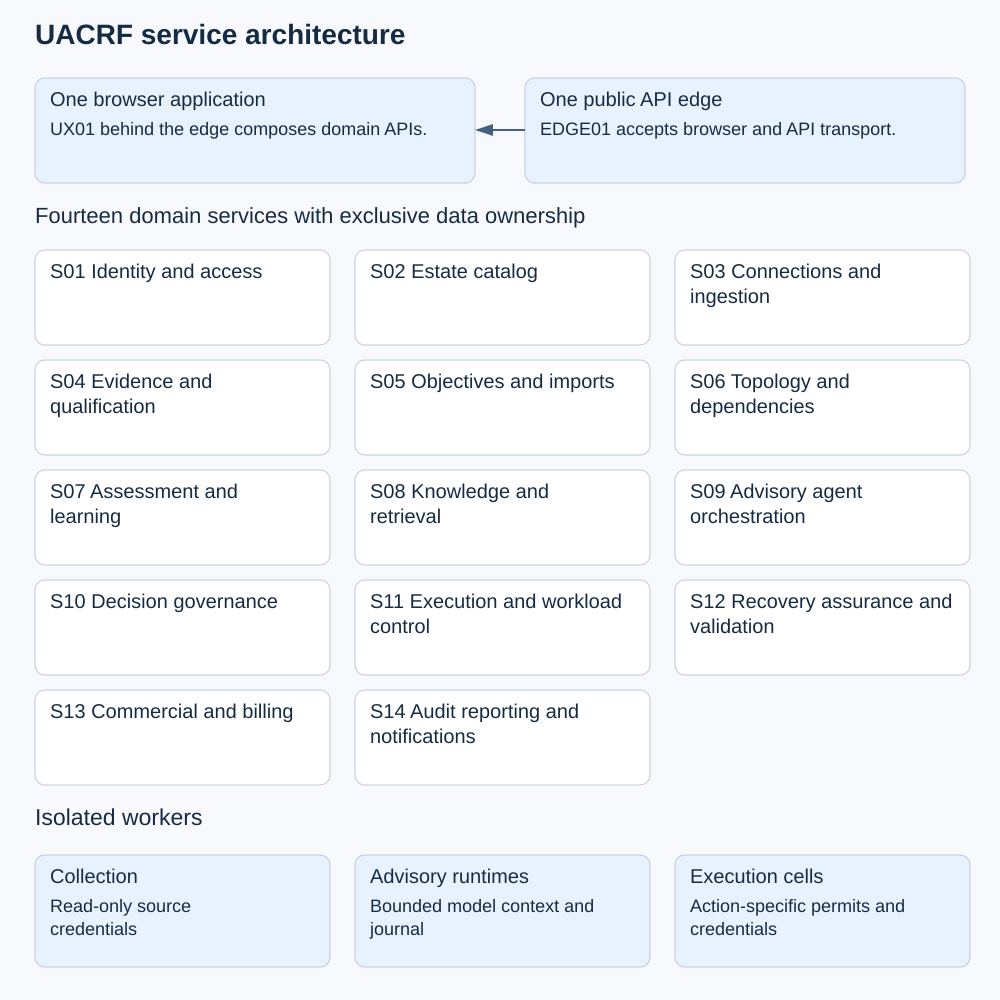
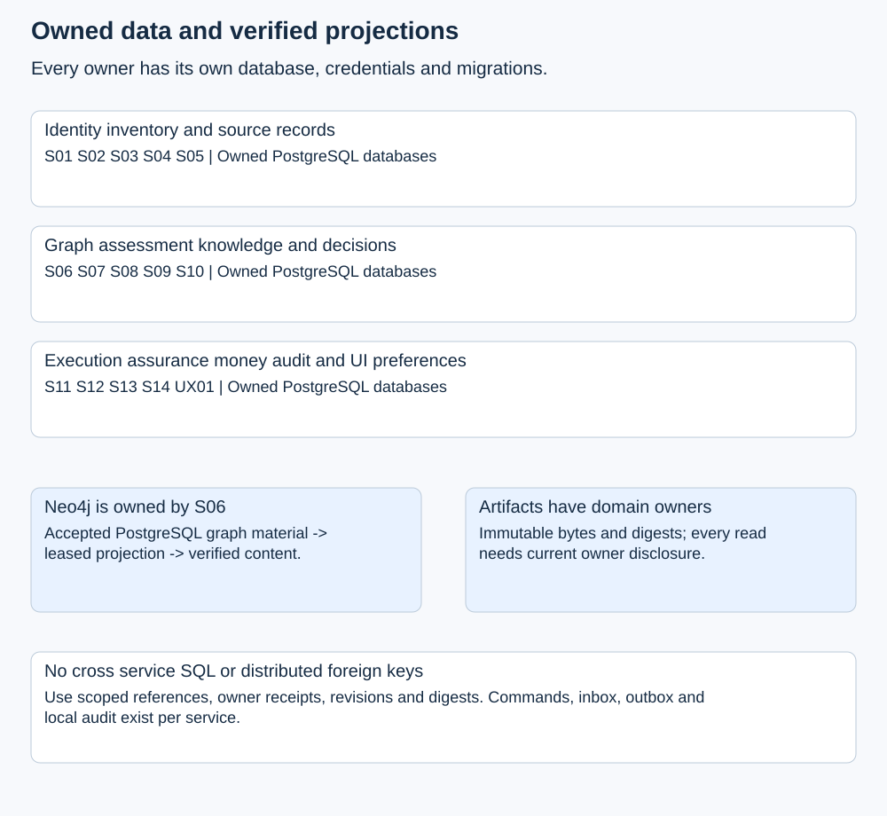
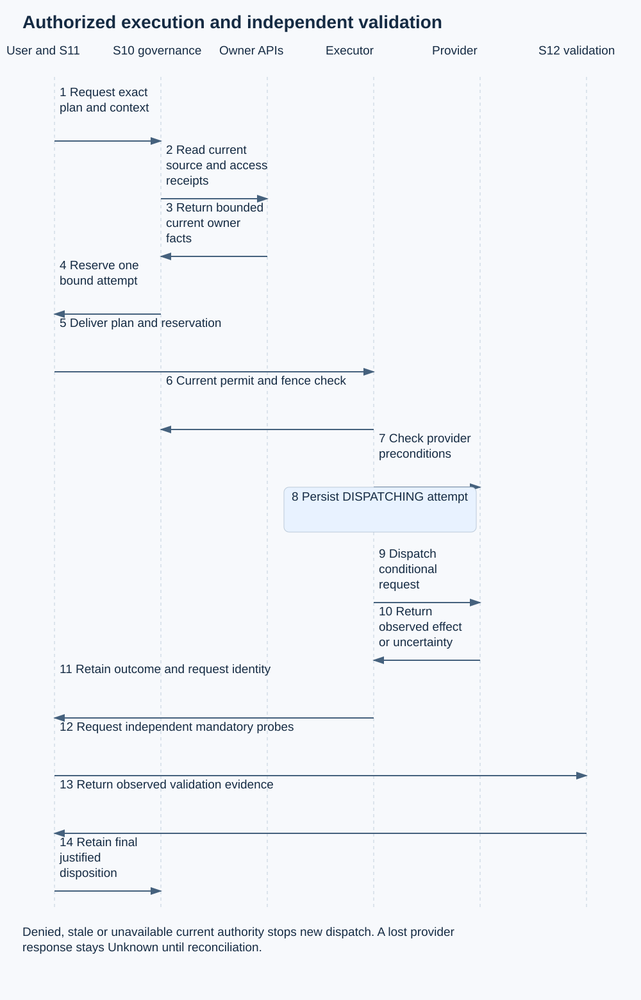

Architecture and implementation design
The recommended target has fourteen domain services, one unified experience API and one API edge. This package is the design for implementation; it does not claim that the target services have been built.
144 inherited API operations, 153 source table declarations and 131 formal requirements are allocated as planning inventories. Target delivery is measured through implemented contracts and tests executed against the microservices.
Architecture and system behavior
Version 1.0 | Architecture revision MS 01 | 3 November 2026
1 Purpose and architectural decision
UACRF will be implemented as independently deployable Java Spring Boot services with clear ownership of their data and decisions. One browser application will guide customers through onboarding, inventory, objectives, evidence, assessment, advisory agents, authorized recovery and outcome review. PostgreSQL will retain authoritative transactional records. Neo4j will provide a separately verified dependency projection owned by the topology service.
The recommended target has fourteen domain services, one experience API and one API edge. A service boundary follows a business responsibility, a data owner and a failure or privilege boundary. It does not follow a screen, table or cloud provider. Services can share managed infrastructure while retaining separate databases, credentials, migrations and release lifecycles. Provider collection, model invocation and privileged execution run in isolated worker deployments behind explicit contracts.
This is a fresh microservices implementation. The existing application is not a build, runtime, regression, or acceptance dependency. The design defines new owner APIs, retained evidence receipts, durable workflows and explicit execution fencing for the target services.
This package specifies the target and its implementation gates. It does not establish that the microservices already exist. Working documents remain Version 1.0; architecture revisions and execution evidence are recorded separately. The published paper, recovered originals and historical releases remain intact.
2 Source baseline and completeness boundary
The inherited route inventories have different scopes: one records 107 registered routes, while an older completion inventory records 99 routes, 97 full operations, two partial routes and 44 unclosed operations. These are planning inputs, not delivered runtime coverage. Delivery is measured by the target services' implemented contracts and executed acceptance evidence.
The architecture inventory contains 74 canonical operations and 70 other documented operations, for 144 unique method/path pairs. It assigns an owner to each. It also assigns migration ownership to 153 source table declarations and allocates all 131 requirement IDs. The table count comes from the installer source and its SQL files, not inspection of a deployed database. Some declarations represent local technical patterns that must be split across services rather than copied into one shared database.
The exact original 47 endpoints are retained in inventories/ORIGINAL_47_DISPOSITION.json. Previously completed operations also require migration and regression acceptance. A successful single-application test is reusable evidence about its behavior, not evidence that its distributed replacement works.
The thirty-nine existing integration scenarios remain planned full-system acceptance cases. They must be run against the target architecture, with provider-specific cases repeated for AWS, Azure and GCP where their semantics differ. No documentation score or production-readiness claim increases because this design exists.
3 Product scope and the paper loop
Services and agents are both first-class protected workloads. A protected agent can stand alone; it does not require the customer to invent a parent service. A compatibility service identity may remain internal while existing governance records are migrated. Journeys link either workload type to customer outcomes. Models, tools, knowledge, memory, identities, runtimes, data and handoffs are shared resources that can support agents, services or both.
UACRF assistance is a separate concern. Its advisory agents inspect evidence and recommendations under bounded assignments. Protecting a customer's agent workload does not promote UACRF assistance into automatic operational authority.
| Loop stage | Responsible services | Required implemented behavior and evidence |
|---|---|---|
| Observe | S03 S04 S06 | Attributable source observations, source-time freshness, quality decisions and accepted topology revisions |
| Detect | S05 S07 | Compare qualified measurements with approved targets; retain findings and Unknown when evidence is insufficient |
| Predict | S07 | Versioned forecasting or anomaly models, holdout evaluation, uncertainty, calibration and shadow comparison before operational use |
| Prevent | S10 S11 | Evaluate bounded candidate actions, obtain required independent approvals and admit only current authorized attempts |
| Withstand | S11 S12 | Enforced budgets, isolation, containment, degraded operation, agent control generations and evidence from fault exercises |
| Recover | S11 S12 | Attributable provider or runtime effects followed by independent probes against approved recovery criteria |
| Learn | S07 S12 S14 | Incident and experiment review, causal hypotheses, action owners, due dates, tests and closure evidence |
| Adapt | S02 S05 S07 S10 | Governed version changes to workloads, targets, models and policies with shadow evaluation, review and rollback criteria |
The present objective-risk classifier is not prediction. A numerical score is not a Core state, and a forecast is not an observation. Quantitative and adaptive features remain separately controlled capabilities with model versions, parameter provenance, uncertainty, evaluation evidence and explicit mapping to the controlled Core-state vocabulary. They must not silently change the existing meaning of a qualified observation or an approved target.
4 Context and operating planes
The customer reaches a single application through the API edge. The experience API composes domain responses into task-oriented pages and keeps browser credentials out of downstream model or provider calls. Domain services communicate through authenticated internal APIs when a current answer is necessary, and through events when consumers can safely catch up.
The control plane owns identity, inventory, evidence, targets, topology, assessment, policy and orchestration. The collection plane reads cloud and monitoring sources. The execution plane performs narrowly authorized mutations inside customer or tenant-isolated execution cells. The reporting plane builds permitted activity views and evidence exports. Separate workload identities, credentials, network policies and deployment pools protect these planes.

A collection credential does not authorize recovery. A model credential does not authorize cloud access. A billing entitlement does not authorize an action. The execution cell receives a bounded plan and a short-lived, action-specific permit; it never accepts arbitrary shell, Cypher, SQL or model-generated tool instructions.
5 Service boundaries
| ID | Service | Primary owned responsibility |
|---|---|---|
| S01 | Identity and access | Tenants, environments, people, system principals, accountable owners, grants and revocation |
| S02 | Estate catalog | Journeys, services, protected agent profiles, activated versions, shared resources and relationship proposals |
| S03 | Connections and ingestion | Connections, source bindings, discovery, intake, collection checkpoints and collection scheduling |
| S04 | Evidence and qualification | Observations, source quality, qualification policy, attestation and reviewed waivers |
| S05 | Objectives and imports | Templates, mandatory constraints, approved workload objectives and imported-definition resolution |
| S06 | Topology and dependencies | Accepted graph material, Neo4j projection, scoped graph queries, impact and reconciliation |
| S07 | Assessment and learning | Cases, evaluations, observed risk, recommendations, prediction models and learning proposals |
| S08 | Knowledge and retrieval | Source/version review, classification, purpose-bound search and retained citations |
| S09 | Advisory agent orchestration | Input seals, role reservations, assignments, outputs, dissent and human arbitration |
| S10 | Decision governance | Signed policies, decisions, approvals, authorizations, action fences and decision replay |
| S11 | Execution and workload control | Plans, workflows, attempts, runtime control, checkpoints and compensation |
| S12 | Recovery assurance and validation | Probes, experiments, recovery paths, certifications and independence assessments |
| S13 | Commercial and billing | Customer qualification, pilots, claims, subscriptions, metering, invoices and reconciliation |
| S14 | Audit reporting and notifications | Audit projections, recent activity, exports, findings routing and notification delivery |
| UX01 | Unified experience API | Journey composition, server-side browser session, saved views and personal preferences |
| EDGE01 | API edge | Public route compatibility, traffic limits and transport routing |
Each service has an API process and, where needed, one or more workers built from the same owned module. A worker is not automatically another business microservice. For example, the graph projector belongs to S06, the assessment worker to S07 and the provider executor to S11. They can scale and receive privileges independently.
SERVICE_DESIGN.md specifies each service's aggregates, APIs, events, dependencies, failure behavior, implementation reuse and acceptance gates. inventories/API_OWNERSHIP.csv and inventories/DATA_OWNERSHIP.csv provide the exhaustive allocation rather than relying on the summary above.
6 Technology and repository design
Retain Java 25 and the currently tested Spring Boot 4.1.2 line as the starting compatibility baseline. Pin actual supported patch releases, image digests, drivers and transitive dependencies in the implementation lock files before building the first service. Do not upgrade the language, framework and service boundaries in the same migration step without a separate compatibility test.
Use Spring MVC for the initial synchronous HTTP services and the existing Thymeleaf/Bootstrap interface behind UX01. This keeps the current UI investment usable while its data calls move to domain APIs. Use explicit JDBC and controlled SQL where domain invariants benefit from precise transactions. JPA is optional for a particular service, not a requirement to rewrite the existing guarded logic.
Use PostgreSQL for transactional records, Neo4j only through S06, Kafka for durable domain events and an object-store adapter for immutable large artifacts. The first implementation uses a polling transactional-outbox publisher; database change capture is a later operational optimization. A PostgreSQL-backed workflow state machine in the owning service coordinates long-running operations. No service waits on an in-memory future as the sole record of a workflow.
Spring Boot's documented Micrometer and OpenTelemetry integration supports the proposed telemetry approach. Kafka ordering and delivery guarantees require careful treatment at external database and provider boundaries. PostgreSQL row security needs explicit runtime roles because privileged roles can bypass it. These are platform facts supporting the design, not claims that the integrations have been deployed. See the official references at the end of this document.
The target repository is development/UACRF_v1_0_microservices. The existing application remains separately preserved during extraction. The target monorepo contains services/<service-name>, experience, gateway, contracts, platform, deploy, tests, docs and tools. Each service produces its own image and can be built and released without rebuilding unrelated domain code. Shared libraries contain transport, telemetry, error and test utilities; they must not contain a shared entity model, cross-domain repositories or a generic master database client.
7 Data ownership and relational integrity
Each domain service owns a logical PostgreSQL database and separate runtime, migration and reporting roles. A local environment may host these databases in one PostgreSQL instance. That is shared infrastructure, not shared tables or cross-service SQL. Production can separate physical clusters as volume, isolation, retention and recovery requirements justify it.
Within a service, use transactions, foreign keys, unique constraints, optimistic revisions and row security to preserve its invariants. Across services, store tenant/environment-qualified identifiers, source revisions, digests, retention references and owner-issued receipts. Resolve current eligibility through the owner. A local copy or an event projection is never the authority for issuing a new action permission.
The current command, outbox, audit_event, worker-binding and job tables are technical patterns. Their future instances belong to each service. S14 receives audit receipts from those instances and maintains a reporting projection. It does not become the transaction coordinator for every write.
The existing analysis_case table contains both actual analysis contexts and advisory-case anchors. Migration must split rows by their context protocol. Actual cases move to S07; advisory anchors move to S09. The original IDs and source bytes remain traceable. Treating the whole table as one entity type would lose a real boundary already present in the code.
Database migrations execute with a deployment role. Runtime roles have no superuser or BYPASSRLS privilege and do not own their business tables. Use FORCE ROW LEVEL SECURITY when appropriate, scoped security-definer functions with a fixed search path, explicit execution grants and a resettable tenant context on every transaction. Connection-pool reuse must not carry one tenant's context into another request.
Every service has a migration history, inbox, outbox, command ledger and local audit receipts. Domain records retain tenant, environment, aggregate ID, revision, creator, timestamps and relevant immutable fingerprints. Billing's tenant-wide account records retain an explicit commercial boundary rather than pretending every invoice belongs to a single workload environment.
8 Graph ownership and projection
S06 owns accepted graph revisions in PostgreSQL and the corresponding Neo4j projection. Other services submit typed relationship proposals or read S06 APIs. They receive no direct Neo4j credentials and cannot independently patch the graph.
A graph revision moves through acceptance, projection and verification. Its source material has a canonical digest. A leased projector applies a revision with scoped node/edge keys and writes a projection receipt. Queries report accepted revision, projected revision, digest and lag. A stale projection is shown explicitly. An action decision requiring revision R cannot quietly use revision R minus one.
Events are keyed by tenant, environment and graph aggregate. Duplicate projection work is idempotent. An older revision cannot replace a newer one. Conflicting content for the same revision is quarantined. The projector verifies actual graph content, not merely the existence of a projection marker. Rebuilds use a new projection generation and switch the read alias only after verification; they do not rewrite accepted history.
Service-only, agent-only and mixed views remain available. Models, tools, knowledge bases, memories, identities, runtimes, regions and failure domains are typed shared resources. Display filters change the view, not the underlying ownership or evidence. Recovery-independence queries return a diagnostic and its assumptions; S12 decides whether a declared path satisfies certification requirements.

9 Artifact and evidence storage
Large source files, model/prompt versions, graph material, outputs and export bundles are retained in object storage. A domain service owns their metadata and authorization. A shared storage library or adapter does not confer permission to read another service's content.
An artifact reference binds tenant, environment, owning service, content digest, media type, size and immutable version. Uploads are staged, validated and committed through the owning API. Downloads use short-lived scoped access or an authenticated stream after a current disclosure check. Raw bucket paths, arbitrary URLs and caller-selected local paths are not accepted as executable references.
Retain source observation time, receipt time, last successful verification and decision time as separate fields. Late arrival cannot make an old observation fresh. A successful check of an unchanged objective definition can refresh its verification record without rewriting its original creation time.
Object storage and PostgreSQL do not form one atomic transaction. The owner stages bytes first, commits metadata only after verification and marks unreferenced staging objects for delayed cleanup. Cleanup must account for active leases, exports and legal holds. A committed reference whose bytes are temporarily unavailable yields a retryable unavailable result, not fabricated evidence. Retention/deletion uses owner-led tombstones and reference checks; it never depends on a cross-database cascade.
Legacy database: and content-addressed references remain resolvable through a scoped migration map. Preserve the exact bytes and original digest of signed material. A normalized migration copy may have a new digest, but it must retain its relationship to the original rather than impersonating that original artifact.
10 API conventions and compatibility
The public /v1 namespace remains the compatibility boundary. EDGE01 routes each method/path to its designated owner and validates transport concerns. Every owner independently authenticates the calling identity, validates tenant/environment scope and checks current domain permission. Gateway authorization alone is insufficient.
The inventory retains the existing 144 public operations and identifies their effective source contracts. New owner-to-owner calls use /internal/v1 and audience-restricted workload tokens. Target additions for prediction, learning, artifact exchange and workflow coordination are listed separately in INTERNAL_INTERFACES.md. They are not retroactively counted as part of the 74 canonical APIs.
Requests that change state require a bounded idempotency key and an expected revision when updating an existing aggregate. A service scopes a key by tenant, environment, principal, operation and target, stores the normalized request digest and returns the original identity for an exact retry. Changed content conflicts. Revoked permission is not restored by an old key; currently authorized history can remain readable where its disclosure policy permits it.
Return 200 or 201 only for the retained domain result named by that route's contract. Return 202 only after durable command and outbox commit. A pending receipt contains the command identity and status location. It does not claim completed analysis, provider mutation or recovery. Workers retain explicit retryable, rejected, expired, failed, cancelled and uncertain outcomes.
Command status is owned by the issuing service. New public command IDs use cmd_S07_<uuid> with the actual owner ID substituted. The retained public schema accepts opaque nonempty strings up to 200 characters and the existing route allows these characters. The edge parses only this controlled issuer prefix and routes to an allowlisted owner; the owner validates scope and resolves its internal UUID. Clients continue to treat the whole ID as opaque. This removes an asynchronous routing-directory gap for newly admitted commands. Existing UUIDs remain routable through a tenant/environment-qualified migration directory populated before cutover. An unknown or undisclosable legacy ID is concealed consistently. Contract tests must verify the preserved exact response shape and both identifier forms at milestone M1.
Internal errors use a consistent problem structure with a machine code, correlation ID, retryability and a safe explanation. The edge serializes the existing external Error schema while that route requires it. A new error body must not be added silently to a closed legacy response. Cursor signatures bind identity, tenant, environment, route, filters and relevant authority revision; a permission or filter change invalidates continuation.
11 Event contracts and transactional delivery
Kafka distributes immutable domain facts and workflow requests. Each producer owns its topic namespace. The event envelope in contracts/event-envelope.schema.json includes event ID, type, schema version, producer, aggregate identity/revision/sequence, tenant/environment scope, observation and publication times, correlation/causation IDs, trace context and a payload digest.
The business change, local audit receipt and outbox record commit in one owner database transaction. A leased publisher sends the event and marks delivery after broker acknowledgement. A crash after publication can produce a duplicate; this is expected. Consumers insert an inbox key and update their local projection in the same transaction, acknowledging only after commit.
Ordering is per aggregate partition, not global. A consumer ignores an identical duplicate, parks a gap and rejects conflicting content for the same immutable sequence. A dead-letter record retains its reason and source identifiers without exposing secret payloads. Replay is explicit, observable and rate-limited. An operator cannot silently turn a rejected conflict into an accepted fact.
Events carry minimal facts and protected artifact references rather than raw credentials, complete evidence bundles or unrestricted prompts. A consumer verifies producer identity and its topic/type allowlist. Event receipt does not authorize a new provider effect. Tracing context supports diagnosis; it is not an identity or access token.
The publisher defaults are proposed targets: dispatch within one second under nominal load, monitor age and backlog, retry with bounded exponential backoff and jitter, and quarantine after the configured failure budget. Retention is a deployment policy subject to classification and replay needs. Neither Kafka idempotent production nor transactions make a PostgreSQL commit or cloud API call exactly once.
12 Current authorization across services
S01 is authoritative for current identity, membership and revocation. A browser chooses an environment through an authenticated session; it cannot assert authority by sending a tenant header. An internal delegation token binds original actor, calling service, receiving audience, tenant, environment, permitted operation, token epoch and short expiry. Each hop can narrow scope and cannot expand the original actor's rights.
Read projections may use a bounded authorization cache if their classification permits it. New actions, approval decisions, credential issuance and privileged workflow transitions require a current authoritative check. When S01 or S10 cannot establish permission, the operation stops with a retryable error. It does not interpret an outage as approval or reuse an expired positive answer.
S10 owns operational approval and authorization state. Required reviewers must be enabled, currently authorized and distinct from the relevant proposer or version author. Narrowed approval cannot expand a candidate's action bounds. A commercial administrator, model runtime or workload owner does not automatically receive approval authority merely because that role exists elsewhere.
A decision context is a vector of owner-issued revisions and receipts: identity epoch, workload version, objective revision, graph revision/digest, evidence/qualification records, policy version, candidate bounds, validation plan and recovery-path constraints. S10 retains the exact vector with its decision. If any required owner cannot establish current eligibility, it does not issue an action permit.
13 Execution fencing and distributed limits
No transaction spans all fourteen databases and a cloud provider. The architecture must make that limitation explicit rather than promise global atomicity.
For a proposed action, S11 obtains the exact provider plan, current owner receipts and a short-lived execution reservation from S10. S10 atomically moves one authorization from ISSUED to RESERVED for one bound attempt. A reservation identifies tenant, environment, workload, action and plan digest, resource scope, validation/recovery context, issuer and executor, control generation and expiry. A token for one attempt cannot be reused for a different resource, plan or environment.
Immediately before dispatch, the executor revalidates the reservation online, checks local cancellation/generation and current provider preconditions, and retains a DISPATCHING attempt before making the provider call. Use conditional resource versions, provider request IDs and idempotency mechanisms where supported. Provider capability is declared per action; absent support cannot be hidden behind a generic success path.
A revocation takes effect immediately at its authoritative owner. S10 is notified to advance the control fence; a notification outage does not delay the local revocation. Every permit reservation and final privileged check still requires current owner authority, so an unavailable or revoked source cannot be replaced by a stale positive cache. Publication of replacement critical context includes a fence acknowledgement before it becomes eligible for new actions. Active attempts move to stop-requested, drained, completed or uncertain according to their actual state. Telemetry changes do not pretend to freeze the external world; the decision has a bounded validity window and external preconditions can still change.
Revocation before permit reservation prevents reservation. Revocation after reservation but before the final dispatch check prevents new dispatch when that check observes the fence. An effect already accepted by a provider cannot be retroactively cancelled by changing a database row. A remaining race between a final check and provider acceptance is contained with short leases, conditional writes and narrow credentials, and must be tested and reported for each provider/action. Operations that cannot meet a required strict invariant remain unsupported for automatic execution rather than being labelled certified.
An ambiguous provider response moves the attempt to OUTCOME_UNKNOWN. Reconciliation reads the provider's actual operation/resource state using the retained request identity. It never blindly retries an irreversible mutation. Compensation is a separately authorized action with its own bounds and outcome; it is not proof that all previous effects were rolled back.

14 End to end customer workflows
14.1 Onboarding and objective setup
S01 establishes the tenant, environments, people and accountable owners. S03 records the provider connection and validates the read-only collection identity. S02 accepts discovered or manually registered services, agents and shared resources. The user builds a journey and links the workloads that support its steps. Imports preserve source identifiers and confidence rather than merging uncertain entities silently.
S05 offers administratively configured templates and organization constraints. A workload owner proposes targets or previews a source definition import. Conflicts remain explicit until resolved. A separate authorized reviewer decides the exact revision; activation creates an immutable effective record. S03 collects observations while S04 qualifies them. S06 builds a verified dependency revision. The setup journey reports which prerequisites are complete and which still need evidence; clicking through a screen does not complete a stage.
14.2 Observe detect and recommend
A connector sends an attributable observation to S04 through S03 intake. S04 retains bytes, source time and quality results. S07 receives a qualified-observation event and coalesces an evaluation trigger for the workload. It obtains the approved objectives and exact topology/context receipts, reads the actual required artifacts and retains a fixed case.
Evaluation distinguishes confirmed success, confirmed breach and insufficient evidence. A risk projection retains its classifier version and measurement cutoff. A late event can update a historical evaluation or trigger an explicit correction, but cannot silently rewrite a completed decision. Recommendations retain bounded effects and prerequisite references. S14 routes findings and escalations to configured owners, recording delivery separately from acknowledgement or resolution.
14.3 Knowledge and advisory agents
S08 approves source versions for specific purposes, classifications and scopes. Retrieval reads actual approved bytes and retains a manifest and exact excerpts. S09 seals the S07 source case and requires a nonempty current retrieval for the same purpose. It resolves activated profiles from S02 and current runtime identities from S01, then reserves one attempt per required role.
A bound runtime claims input once, caches the exact packet and records dispatch intent before invoking an approved gateway. The gateway never receives the UACRF API token. Output binds producer, run, assignment, attempt, context and supplied citations. S09 retains all dissent, including late ineligible results. An independent human reviews the exact viewed revision and complete output set. Missing or abstaining mandatory output blocks selection; rejection or blocking dissent remains visible. A common recommendation is still advisory.
The existing Java journal and gateway provide a useful extraction seed. The distributed replacement must revalidate owner receipts and preserve the one-time-delivery and ambiguous-outcome behavior rather than sharing the legacy database function across services.
14.4 Approved recovery and independent validation
S10 evaluates a retained bounded candidate and required approval obligations. S12 prepares a validation plan with independently approved probe definitions, budgets and declared recovery criteria. S11 translates an intent without mutation and retains the provider-specific plan. A distinct authorized review and current context are required before S10 issues an action authorization.
S11 executes through the fenced attempt protocol. S12 collects independent probe results across service, dependency, identity, region and agent-specific behavior as required by the plan. A provider success response is not a recovered state. Certification binds the declared failure scenario, workload/version, path, evidence, graph assumptions, scope and expiry. A material dependency, policy or workload change invalidates current eligibility and requires reassessment.
14.5 Protected agent resilience
S02 versions model, prompt, knowledge, tool, memory, identity, runtime and handoff contracts. S11 tracks run identity, step sequence, remaining budgets, control generation, checkpoints and admission state. S04 retains attributable agent events and quality decisions. S06 exposes agent and mixed dependency views, including common models and identities.
Resilience scenarios include model outage, knowledge withdrawal, tool timeout, lost or duplicated handoff, retry storms, context drift, expired identity, checkpoint corruption and unsafe resume. A resume must bind the current authorized version and generation, verify checkpoint/memory provenance and satisfy required independent evaluation. Migrating to another model or region cannot bypass data policy, tool-effect bounds or validation requirements. S09's advisory tier does not substitute for this protected workload control.
14.6 Billing and value review
S13 creates a versioned subscription and freezes its applicable pricing, allowance, currency and charging policy. Domain services emit immutable measured-usage receipts with stable source identities. S13 verifies the producer, scope, metric and unit before admitting usage. Duplicate delivery does not create another charge.
Rating applies exact decimal arithmetic and the frozen rules. Adjustments use immutable correction, credit or refund records rather than editing a posted invoice. Provider costs, customer charges and claimed value remain separate. Ambiguous model or provider completion follows the agreed charging policy and cannot be treated as zero usage or successful billable work by inference. Customer/pilot economics show attributed measured inputs and uncertainty; product or research claims require their own evidence and approval.
15 Unified UI and customer journey
Keep one navigation and terminology system. The recommended journey is Start here, Connections, Inventory, Journeys, Objectives, Evidence, Assessments, Advisory review, Decisions, Recovery, Activity and Administration. Services and Agents remain directly accessible under Inventory, with shortcuts when users commonly work there. Knowledge and shared resources can support both workload types.
The experience API composes screen-specific views and reports partial unavailability explicitly. It must not join service databases. A graph screen can show retained topology during a reporting outage, while action controls stay unavailable if current authorization cannot be verified. Every task page states its prerequisite, resulting retained record and next valid step. Breadcrumbs show location; the setup map shows progress and dependencies. Neither replaces the other.
Provide real resource selectors and linked details for journey-to-workload/resource association, owners/users, objective templates, source imports, policy review, case preparation, assignment results, validation and billing. Use provider/service icons as supporting cues with accessible text labels. Recent activity links to the owning aggregate and distinguishes requested, accepted, completed, failed, cancelled and unknown states. A toast announcing acceptance must not claim that recovery or a cloud connection succeeded.
A human screen never offers a button that impersonates a system runtime. Permission-sensitive controls are hidden or disabled with a task-specific explanation, while the API repeats the authorization check. Preserve submitted fields on error. After a context conflict, show the changed revision and require the user to review it; do not silently add new outputs, source bindings or approval scope.
16 Deployment and multi cloud operation
The portable application runs as OCI images. Kubernetes is the production orchestration target, with managed PostgreSQL and object storage where their configured features meet the service contracts. Neo4j is isolated behind S06. Kafka can be managed or operated with an approved supported distribution; provider-native event systems are not assumed to have identical Kafka, ordering or replay semantics.
A development profile runs actual service boundaries with Docker Compose and local infrastructure. A full integration profile exercises every target service and worker. A cloud qualification profile provisions a selected provider and validates its IAM, networking, artifact retention, request-id, conditional-update and failure behavior. Production starts in one chosen region with backups and a tested recovery strategy; active-active global writes are a separate design requiring conflict and ownership rules. After restoring identity or authorization data, enter AUTHORITY_RECOVERY mode until revocation/control epochs reconcile with retained trusted watermarks or an approved re-admission procedure. A business-data RPO does not authorize reactivating permissions lost in a restore.
AWS, Azure and GCP adapters implement the same typed capability interfaces but have separate conformance results. Collection capabilities cover inventory, metrics/logs/traces where authorized, configuration changes and source definitions. Execution capabilities declare permitted resource/action types, conditional version support, idempotency, operation-status lookup, cancellation and compensation. A provider without a capability is reported unsupported for that action; it is not counted as an implemented successful workflow.
Separate namespaces or workload pools isolate ingress, control, collection and privileged execution. Default-deny network policy permits only declared API, broker, database and provider connections. Runtime identities use workload identity and short-lived credentials where supported. Secrets are injected from an approved secret store and rotated without placing values in source, artifacts, logs or UI forms.
Stateless APIs target at least two replicas for the production availability profile. Stateful infrastructure and worker leases have explicit redundancy and recovery policies. Development may use one replica and lower durability for convenience, with those differences stated in its profile. Architecture approval does not establish the availability of a particular topology.
17 Availability performance and capacity targets
The following are initial engineering acceptance targets, not measured achievements or promises to customers. Ratify them against workload measurements, the formal requirement values and commercial commitments before a service-level agreement is offered.
| Concern | Initial target and measurement |
|---|---|
| Read API latency | p95 below 300 ms for bounded retained-metadata reads under the agreed load profile; expensive graph/export queries have separate budgets |
| Durable admission | p95 below 1 second when owner database and required current access services are healthy; external source/model work remains asynchronous when necessary |
| Projection lag | p95 below 5 seconds under nominal load, with revision and lag visible to readers; authorization never treats lagging data as current proof |
| Ingestion load profile | Baseline test at 100 protected workloads and 10 observations per workload per minute; 1,000 events/minute, then test 10 times that rate |
| Availability objective | Initial control-plane monthly target 99.9 percent, measured per customer-visible operation and dependency path |
| Recovery targets | Initial RPO at most 5 minutes and RTO at most 60 minutes for the agreed regional failure scenario, subject to formal requirements and actual restore tests |
| Revocation checks | No new action admitted from an expired positive authorization cache; measure permit reservation, final dispatch and provider acceptance separately |
At a 30-second evaluation cadence, 100 workloads can produce about 288,000 scheduled evaluations per day if all run continuously. Coalesce changes and apply workload-specific policies so the design does not create unnecessary model calls, repeated source reads or evaluation storms. Tiering affects retention and scheduling capacity within policy; it cannot waive a safety or approval check.
Size using measured payloads, retained artifacts, graph nodes/edges, evaluation cost and event retention, not workload count alone. Publish a capacity worksheet before deployment. Track queue age, hot partitions, PostgreSQL connections, graph-query limits, artifact bandwidth and model concurrency. Avoid an unbounded cardinality metric label for tenant, user, resource or run ID.
18 Reliability and platform self resilience
Every remote call has a timeout, concurrency bound and retry policy. Retry safe reads and idempotent commands only within their deadline. Use backoff and jitter, bounded queues, bulkheads and per-tenant quotas. An open circuit means unavailable, not an empty result. Never automatically retry an ambiguous irreversible provider mutation.
Workers use durable leases, generation fencing and heartbeat expiry. A former lease holder cannot commit a result after another worker takes over. Poison events are quarantined and retried through an explicit operator workflow. Cancellation is a durable state transition that invalidates new work and preserves already observed late outcomes.
The platform itself needs telemetry independent of the workloads it protects. Alert on authorization outages, unprocessed outbox age, projection mismatch, source verification failures, unknown provider outcomes, exhausted budgets, dead-letter growth and missing billing reconciliation. Critical operational recovery must not depend exclusively on the same agent/model or cloud account whose failure is being assessed.
19 Security privacy and information lifecycle
Threat analysis covers cross-tenant references, confused service delegation, event spoofing, replayed grants, stale approval, source substitution, prompt injection, arbitrary provider/tool invocation, secret exposure and billing duplication. The acceptance matrix tests these cases against the actual boundary where the failure could occur.
Authenticate human sessions with OIDC. Apply service audience restrictions and mutual transport authentication or equivalent workload identity for internal calls. Validate scope at every owner and enforce it again at PostgreSQL and Neo4j query boundaries. Broker ACLs restrict a service to publishing its own event families and consuming only the subjects it needs. A service account is not a human reviewer.
Classification and purpose flow with artifacts and receipts. A knowledge withdrawal can block new use while retaining permitted historical metadata. Data deletion considers all replicas, projections, exports, journal caches, backups and legal holds. Regional placement and cross-region model routing require an explicit data policy. Logs and traces retain identifiers and outcomes but exclude access tokens, credentials, unrestricted prompts and confidential evidence payloads.
Run bounded dependency and image scanning, generate an SBOM, sign release images and retain deployment provenance. Dependency upgrades, key rotation and emergency access have named operational runbooks. Emergency access is recorded and independently reviewed; it cannot silently rewrite historic decisions or turn a failed validation into recovery.
20 Observability audit and recent activity
Use correlation and causation IDs across HTTP, event publication and workflow attempts. Propagate standard trace context with Micrometer/OpenTelemetry. A workflow trace links owner commands, source receipts, model calls, provider requests and validation results while respecting classification and sampling policy.
Each domain writes audit receipts in its own transaction. S14 builds a searchable activity projection and records projection watermark and gaps. A reporting outage must not make an already committed domain change disappear. When the read model catches up, deduplication preserves one logical event. Audit export rechecks disclosure at the source owner and seals a manifest of exact retained artifacts and digests.
Notifications have their own delivery identity, retry history, destination policy and redaction rule. Delivery is not acknowledgement. A finding remains unresolved until its actual owner and closure workflow establish resolution. Failed notification delivery must be visible rather than treated as escalation completion.
21 Implementation and extraction strategy
Implement the architecture in dependency-ordered vertical slices. The first milestone proves two independently deployed services, separate databases, real service identity, outbox/inbox delivery and one browser workflow. A folder containing fourteen applications that all call the legacy database is not the target.
Preserve the existing Java application while extracting one authoritative domain at a time. Route ownership has a published epoch. Before a domain changes owner, stop its new writes, drain or fence workers, export a consistent snapshot, replay accepted changes to a watermark and reconcile rows, IDs, digests and artifact availability. Switch one write owner only after parity tests pass. Reads can be compared in shadow, but the system must not dual-write domain truth independently to old and new owners.
Legacy SQL functions move with their owned invariants. Replace cross-owner joins and foreign keys with API receipts and local references before separating their databases. Existing single-database tests remain regression tests; add contract, event, two-service and full-workflow tests. Reuse verified algorithms without treating a shared database helper as a remote-service contract.
Rollback before new writes can restore the previous route owner after validation. After new writes, rollback requires an explicit reverse migration or a forward correction with reconciled events. Simply flipping routing to an older database would lose accepted facts and is prohibited.
IMPLEMENTATION_PLAN.md defines milestones M0 through M8, their dependencies, concrete deliverables and completion evidence. The architecture package does not create those services or restart a continuing goal. Implementation proceeds under the new approach through explicit accepted milestones.
22 Acceptance and definition of done
A service is done only when its owned happy path, failure behavior, current authorization, persistence, event delivery, observability and customer workflow are exercised. A generated class, a matching OpenAPI path, a pending queue receipt or an always-denied provider method is insufficient.
Verify every existing operation against its designated owner and exact public serializer. Each command has a real status path and terminal outcomes. Every cross-service link identifies a source owner and revision. Each data migration has row/digest reconciliation, artifact resolution and a tested rollback or forward-repair procedure. Every workflow diagram has implemented restrictive alternatives, not only a successful path.
Run the thirty-nine inherited full-system scenarios and the new distributed cases in ACCEPTANCE_AND_RISKS.md. Separate local fixtures, real database tests, provider conformance, deployed upgrades, browser acceptance and full-system acceptance. Preserve executed results with source hashes and test configuration. A new architecture diagram does not close an unexecuted acceptance case.
23 Design decisions and unresolved deployment choices
The service boundaries, exclusive data ownership, PostgreSQL/Neo4j split, Kafka delivery model, Java/Spring Boot stack, single UI, bounded workflow orchestration and staged extraction are the recommended design. Their rationale and alternatives are recorded in DECISIONS.md.
Deployment-specific choices remain the primary provider/region, expected tenant and data volumes, retention/legal-hold policy, availability commitments, identity provider, supported first recovery action, commercial charging rules, model gateway and operating budget. Defaults and implementation gates allow engineering to start without pretending that these choices have already been approved. They must be settled before their corresponding live acceptance or commercial commitment, not used to delay the foundational service implementation.
24 Official technical references
The recommendations above are architectural judgments grounded in the source application. The following official documentation supports specific platform behavior; it does not certify this proposed system.
• Spring Boot observability and Micrometer/OpenTelemetry integration: https://docs.spring.io/spring-boot/reference/actuator/observability.html
• Apache Kafka design and delivery semantics: https://kafka.apache.org/41/design/design/
• PostgreSQL row security and privileged-role behavior: https://www.postgresql.org/docs/18/ddl-rowsecurity.html
• Neo4j database and transaction administration: https://neo4j.com/docs/operations-manual/current/database-administration/
• Kubernetes deployment lifecycle: https://kubernetes.io/docs/concepts/workloads/controllers/deployment/
• OpenTelemetry context propagation: https://opentelemetry.io/docs/concepts/context-propagation/
• JSON Canonicalization Scheme RFC 8785: https://www.rfc-editor.org/rfc/rfc8785
• HTTP Problem Details RFC 9457: https://www.rfc-editor.org/rfc/rfc9457
Detailed service specifications
Version 1.0 | Architecture revision MS 01
These specifications define the target implementation boundaries. All target services are proposed. The existing Java classes and SQL are migration inputs, not independently deployed services. Every service follows the common identity, database, inbox/outbox, command and artifact rules in the main design. API ownership is exhaustive in the accompanying inventory; the examples below explain important behavior rather than repeat every path.
S01 Identity and access
S01 owns tenants/environments, principal admission, eligible human owners, scoped memberships, revocation epochs and service-delegation receipts. An external identity provider proves who signed in; S01 decides which registered principal and current UACRF permissions that identity has. Deployment bootstrap and emergency recovery are explicit administrator operations with an auditable initial trust chain.
Its principal and membership aggregates preserve issuer/subject identity, enabled state, token-valid-after time, scoped capabilities and expiry. Membership changes require the existing independent authorization rules. Ownership transfer validates the destination's current eligibility and the expected aggregate revision; catalog and other owners receive an owner-eligibility receipt, not SQL access to the membership table. Last-administrator and self-grant protections remain local transactional invariants.
Existing identity-provider, principals, owner-candidates, memberships and transfer APIs remain externally stable. Internal APIs issue narrow audience-bound delegation and current eligibility receipts. Events include principal status, membership revision, ownership eligibility and environment lifecycle changes. Revocation is delivered asynchronously for cache invalidation, while privileged transitions use current online checks. A broker outage therefore does not make a stale positive cache sufficient for an action.
Extract Identity verification and identity SQL into this service, while each caller retains transport signature validation. Keep IdP authentication separate from membership administration. Acceptance includes cross-tenant references, expired/deactivated identities, grant narrowing, last-admin safety, independent authorization, confused-deputy attempts and failure during an S10 permit reservation.
S02 Estate catalog
S02 owns workload identity, journey structure, journey-to-workload/resource links, shared assets, accountable-owner references and protected agent profiles/versions. It distinguishes authored inventory intent from provider-observed configuration. Discovery can propose an identity match; uncertain matches remain reviewable and never overwrite an accepted workload silently.
An agent profile contains its immutable service compatibility anchor, owner, runtime principal, purpose and kind. Each activated version pins model, prompt, knowledge, tools, memory, data policy, runtime build, evaluation and recovery contracts. A human version author cannot independently activate their own bytes even when a different person owns the profile. Retiring a relationship removes it from current views while retaining history.
Public APIs include services, agent-workloads and versions, journeys/steps/capabilities, shared resources/consumers and dependency proposals. Protected execution creation and runtime events belong to S11, not the profile registry. S02 emits workload-version activation, inventory revision and relationship proposal events. S06 accepts and projects qualified relationships; a catalog save alone does not establish graph acceptance or recovery independence.
Use current catalog/agent registration SQL and UI forms as extraction inputs. Replace identity-table joins with S01 receipts. Test service-only journeys, standalone agents, mixed shared resources, owner transfer, duplicate/conflicting links, independent version approval, retired resources and partial discovery. UI selectors must link to current retained objects, not fixed example IDs.
S03 Connections and ingestion
S03 owns connection enrollment, provider capabilities, credential references, source bindings, discovery runs, collection policies and leased source checkpoints. Credentials are stored by reference in an approved secret store. Collection workers receive read-only provider permissions and cannot use execution-cell credentials.
Collection schedules distinguish polling interval, provider publication interval, observation freshness and evaluation cadence. Scheduler leases prevent two workers from advancing the same source checkpoint. Event sources retain their provider identifiers, sequence/continuation position and source observation time. Duplicates are admitted idempotently; gaps, throttling and conflicting payloads remain observable. A failed poll does not refresh the source's successful-verification timestamp.
Connectors implement inventory snapshots, signal batches, configuration receipts and source-definition reads through a declared provider capability matrix. They submit observations to S04 and objective-definition import material to S05. Connection reconciliation compares source state and scoped catalog/topology receipts, retaining a drift report instead of silently repairing unrelated authorities.
The current collectors are unavailable skeletons. Extract interfaces and policy behavior, then implement and test real adapters separately for AWS, Azure and GCP. Keep fictional UI graph examples in the UI graph-design package; do not seed them as provider inventory or accepted evidence. Acceptance requires real retained source fixtures, pagination, permission denial, source outage, rate limits, checkpoint recovery, out-of-order delivery and live read-only provider conformance before claiming cloud collection works.
S04 Evidence and qualification
S04 owns evidence events, raw-byte metadata, source schemas, verification receipts, quality decisions, qualification policies, independent review and gap-waiver lifecycle. Measurements, configuration observations and agent events retain distinct typed meaning. A percentile without its unit/window/selector cannot stand in for another measurement.
Observation retention verifies actual scoped bytes and source attribution before commit. Qualification uses the exact approved policy revision and its source/timing/coverage constraints. It retains why evidence was qualified, disqualified or unknown. A waiver must be signed, scoped, independently reviewed and current; it does not create measurements for an uncovered interval.
Qualification and withdrawal APIs emit receipts/events used by S07 and S10. Owner-issued eligibility receipts identify observation/qualification IDs, digests, measurement cutoff, issue time, expiry, policy version and revocation epoch. A service may keep historical results while refusing new use after withdrawal or expiry. Disclosure requires the current classification and purpose checks, not possession of an old artifact reference.
Reuse the evidence processor, qualification engine/processor, waiver trust and strict staging validation. Remove direct access to S01/S02 policy facts when extracting; replace it with checked receipts. Tests include actual missing/corrupt files, unsupported schemas, interval gaps, exact decimal/percentile meaning, same-key conflicts, waiver revocation, authority changes during verification and a fenced late worker commit.
S05 Objectives and imports
S05 owns templates, comparison/measurement definitions, allowed target ranges, organization constraints, workload objective revisions, decisions and activation history. An approved objective expresses the required outcome. The journey explains its customer relevance; it does not supply telemetry or invent a target.
Imports preserve source definition identity, observed source revision, last verified time and user resolution. A preview is immutable input for a conflict decision. Resolve, propose, submit, decide and activate are separate transitions with expected revisions and retained reasons. An unchanged source definition can remain current after successful re-verification. A source outage cannot establish that an old definition is still valid.
S05 checks workload ownership through S02 and current human authority through S01. It emits activation, supersession and import-resolution events. S07 consumes the effective target definition; S03 supplies collection source material and triggers, but neither activates an objective on the owner's behalf. Mandatory organization constraints apply to both imported and local proposals.
Extract the existing objective procedures and forms, including the partially implemented provenance path. Complete imported provenance before calling that operation done. Acceptance covers conflicting source updates, retired templates, exact units/windows, independent review, mandatory-rule enforcement, source verification outages and a material objective change invalidating a pending action context.
S06 Topology and dependencies
S06 owns graph proposal acceptance, immutable graph revisions, typed nodes/edges, impact/difference/subgraph records and projection/reconciliation receipts. PostgreSQL is its authority. Neo4j serves graph reads for the exact accepted scope and revision. No other service writes Neo4j.
Graph keys include tenant, environment, entity type and stable entity identity. Every relationship is checked for permitted endpoint roles, source provenance, revision and scope. Acceptance distinguishes an observed dependency from an authored proposal. Projection workers apply idempotent revisions under a lease and verify actual resulting content before marking a generation usable.
Existing graph reads, dependency/impact/independence views and the remaining classify/select/impact/reconciliation operations move here. Queries expose service-only, agent-only and mixed paths and show shared models, identities, cloud resources, regions and failure domains. The UI scope selector filters one authorized accepted revision; it is not a new source of topology or authorization. Reconciliation reports differences between catalog intent, accepted provider inventory and the projection; it cannot promote a drifted graph into an authorized context.
Reuse GraphStore, GraphService, GraphWorker and typed graph validation. Test duplicate, stale and conflicting versions, projection-marker tampering, tenant-filter omission, bounded traversals, rebuild switch-over, lost lease, graph outage and exact revision use in S10 decisions. Diagnose independence here; certify it in S12 against the declared failure scenario.
S07 Assessment and learning
S07 owns fixed cases, rule packs, deterministic evaluation results, observed risk, retained candidate recommendations, prediction/model records and learning proposals. It obtains exact effective objectives from S05, qualified source receipts from S04 and graph receipts from S06. It retains the complete dependency vector and actual artifacts used for a calculation.
Evaluation modes retain their established meaning. A shadow or dry-run label is not an action permission. A confirmed breach and missing evidence remain distinguishable, and an old healthy result cannot replace a newer unknown context. Recommendations retain effect bounds and prerequisite references while remaining non-executable.
Prediction workers use approved feature windows, pinned model versions, model cards, data lineage, uncertainty and leakage-resistant evaluation. A forecast records forecast time and horizon separately from observation time. Learning records link incidents/experiments to hypotheses, owners, due dates, proposed versions, tests and closure evidence. Adaptation proposals pass through the appropriate owner and review service rather than automatically changing production policy.
Extract AnalysisCases, EvaluationEngine/Measurements/Processor/Worker and ProposalProcessor/Worker. Complete the unimplemented predictive/learning interfaces under explicit feature gates and measurable acceptance. Tests cover actual source-store failures, boundary value calculations, stale revisions, repeated source verification, missing inputs, corrected late measurements, deterministic replay, forecast calibration and rejected unreviewed model promotion.
S08 Knowledge and retrieval
S08 owns knowledge items, immutable versions, independent reviews, classification, allowed purposes, target scope, retrieval manifests and citation bindings. Uploading a document creates retained material; it does not approve that material for inference or recovery advice.
The initial supported search preserves the existing bounded exact-term retrieval contract and actual excerpt verification. PDF conversion, embeddings and external indexes require separately versioned processors and provenance; they are not implied by a search endpoint. Selected excerpts retain source version, chunk/locator and both source and excerpt digests.
Current eligibility checks owner/reviewer authority, review deadline, lifecycle, purpose and classification. A newer unapproved draft does not replace the last eligible approved version. Withdrawal blocks new use and affected protected reads according to policy while keeping permitted history. S09 may use a manifest only for a matching source case and sealed purpose.
Reuse KnowledgeRetrieval, RetrievalService and staging format checks. Tests include unsupported files, bounded ranking, duplicate chunks, wrong purpose/classification, source/excerpt substitution, missing files, withdrawal, approved successors, changed requester authority and replay without disclosing withdrawn source text.
S09 Advisory agent orchestration
S09 owns attributable advisory seals, orchestration runs, mandatory roles, budget reservations, assignments, one-time delivery, outputs, dissent and human arbitration. Profile/version truth stays in S02; source cases in S07; retrieval in S08; current identity in S01. S09 retains exact receipts and immutable input material instead of querying those services' databases.
Supported A0/A1/A2 workflows derive their tier from the role set. Every role has a distinct profile/runtime identity and one bounded attempt. The configured gateway receives approved read-only context and a separate credential. The runtime journal retains dispatch intent before invocation and reuses a retained result after output retry. A delivery lost before local durable storage requires explicit reconciliation rather than another automatic invocation.
Outputs bind producer, assignment, attempt, generation, context and supplied citations. MODEL_OUTCOME_UNKNOWN retains null usage and abstention. Cancellation blocks new work and preserves late ineligible results. Arbitration checks the exact viewed revision and complete retained output/dissent set, re-verifies actual files and retains the human rationale with its canonical fingerprint. Advisory selection never grants action permission.
Extract the tested AdvisoryWorkflow, AdvisoryArtifacts, AdvisoryRuns, gateway, journal and remote runtime client; replace their shared SQL prepare/finish context with owner receipt APIs and local fencing. Test A0/A1/A2, duplicate attempts, shared source dissent IDs, missing role output, wrong runtime, model timeout, cache/journal failure, stale purpose, cancelled generation, complete human review and output retry with exactly one observed fixture gateway invocation.
S10 Decision governance
S10 owns signed authorization-policy versions, policy decisions, approval obligations/decisions, operational authorization reservations, revocation fences, decision envelopes and read-only replay. A candidate record, a model recommendation and a commercially licensed feature are inputs, not approvals.
A policy decision compares exact candidate effects, qualified prerequisites, action scope, validation/recovery plan and required reviewers. Independent approval can narrow scope, defer or reject. Issuance pins the approved context vector. Final permit reservation and revalidation are local transactional state transitions bound to one executor attempt. Critical publication/revocation uses the control-fence protocol described in the main architecture.
Decision envelopes retain immutable source references, digests, rules, arithmetic, reviewer decisions and assumptions. Replay runs in a read-only worker without provider credentials. It reconstructs historical reasoning and cannot reissue an operational authorization or call a provider. Replayed facts remain historical even if a current model would suggest a different candidate.
Reuse the ActionPolicyEngine and policy signing/trust components; durable decisions, approvals, permit APIs and distributed source checks still require implementation. Acceptance needs a successful bounded authorized action path as well as denial cases, reviewer independence, stale source/policy, revocation races, expired reservations, replay without side effects and an unavailable dependency preventing new permission.
S11 Execution and workload control
S11 owns provider plans, workflow steps, attempt ledgers, protected agent executions, generation control, checkpoints and compensation orchestration. Provider adapters run in tenant-isolated execution cells with narrow short-lived credentials. Translation is separate from mutation and retains both provider-neutral intent and exact provider request constraints.
A durable workflow moves through accepted, waiting for authorization, ready, dispatching, observing, validation requested and a justified terminal result. Compensation and cancellation are explicit branches. Before a provider call, persist its attempt and stable request identity. A timeout yields unknown outcome until provider reconciliation; do not automatically repeat an irreversible effect.
Protected agent events consume declared budgets in sequence and bind the active version, runtime identity and generation. A checkpoint is not sufficient for resume without its memory/context provenance and required S12 evaluation. A new model, identity, tool or handoff contract requires the appropriate version/context review.
Extract current guarded agent execution procedures into S11 and implement actual provider plan/execute/status/compensate ports. First prove a real bounded local execution adapter with an observable effect; then qualify a provider action individually. Tests cover authorization consumption, duplicate delivery, process death around dispatch, late response, conditional-version mismatch, cancellation, compensation failure and recovery verification through S12.
S12 Recovery assurance and validation
S12 owns validation plans, approved probe bindings, results, resilience experiments, recovery path definitions/certifications and independent recovery assessments. A retained plan or a service dependency diagram is not an executed probe or a certified path.
A plan declares mandatory checks, target scope, expected baseline, probe versions, schedule/dependency graph, concurrency and budgets. Probe workers receive least-privilege read/test identities distinct from mutating executors where independence is required. Results retain actual observations, time, source and plan/version binding. Missing, stale or failed mandatory checks prevent a successful validation.
Certification binds a declared scenario, path, workload version, fault-domain assumptions, evidence and validity interval. Change review evaluates whether a graph, policy, identity, source or workload change invalidates that certificate. Controlled experiments require an approved blast radius, stop condition and action authorization when they cause effects. Diagnostic assurance remains available without claiming that a live recovery was proven.
Reuse ValidationPlanProcessor/Worker, ValidationPlans and Assurance; add real probe dispatch and outcome verification. Tests include dependency cycles, source/probe-policy drift, incomplete mandatory checks, shared recovery dependencies, agent model/knowledge/tool failures, unavailable probe identities, containment failures and an independently observed successful recovery.
S13 Commercial and billing
S13 owns customer qualification, paid-pilot charters, value review, evidence-backed product claims, product investment/launch gates, billing accounts, subscriptions, price/allowance versions, admitted usage, invoices, payments, credits/refunds and reconciliation. Operational policy approvals remain S10 records with different purposes and authority.
A source usage receipt has an immutable identity, producer, metric, unit, quantity, observation interval and scope. Admission verifies it before rating. Rating uses exact decimals and frozen contractual rules; a later correction is another retained record. Invoice posting, payment allocation and refunds have local transactional invariants and stable provider webhook IDs. Agents cannot act as finance reviewers or increase their own entitlements.
Provider cost and customer revenue are separate ledgers. Model/provider reservations do not create charges, and ambiguous completion follows an explicitly approved charging policy. Customer economics aggregates measured revenue, cost and effort using attributable records and declared currency conversions. Marketing/research claims retain their supporting evidence and approved wording rather than being generated as fact from a value estimate.
The existing billing DDL and query catalogue are substantial design inputs, not a completed subscription system. Implement ingestion, rating, posting, webhook handling, reconciliation and UI through actual workflows. Test duplicate usage, out-of-order webhooks, price changes during a period, allowance boundaries, tax/currency rules, credits/refunds, unknown completion and payment-provider outage before commercial launch.
S14 Audit reporting and notifications
S14 owns audit read models, activity projections, finding notification routes/delivery state and evidence-bundle assembly. Source domain services remain authoritative for their business facts and transactional audit receipts. S14 does not approve actions or serve as a distributed transaction coordinator.
Consumers retain producer sequence, source receipt identity, classification and watermark. Activity reads disclose only records currently visible to the caller. Exports obtain current owner-authorized references, seal a manifest and retain export provenance. Missing source content is reported; it is not replaced by an invented complete bundle. A notification delivery receipt remains separate from human acknowledgement and actual finding closure.
Implement queues for destination delivery, retry/redaction policy, escalation owners and dead-letter review. UI recent activity links to each actual owning record. Test duplicate/out-of-order audit events, withheld source fields, export with an unavailable owner, destination outage, ownership transfer, replay and complete tenant/environment isolation.
UX01 and EDGE01 Experience and API edge
UX01 retains the current single browser application and composes domain API responses. It owns personal saved views/preferences and the server-side session, not domain truth. Page-specific view models avoid making the browser perform fourteen independent authentication flows. Screens preserve task inputs, exact reviewed revisions and links to retained results. Partial failure shows which part is unavailable and prevents unjustified action controls.
EDGE01 terminates the public transport, enforces limits, maps legacy and new command IDs, preserves route-specific serializers and routes to one designated owner. Owner services still perform current authorization. The gateway does not directly query any domain database. Internal domain callbacks never trust actor/tenant headers from the public network.
Extract UiGateway, UiSecurity and controllers into UX01 while replacing their in-process dispatch with typed authenticated clients. Extract route ownership and transport functions from Api/Routes into EDGE01. Acceptance needs real sign-in, current permissions, request protection, accessible keyboard navigation, task completion, correct error retention, role-sensitive buttons and browser workflows across multiple running services. Existing mockups and authenticated HTML tests remain useful, with separate visual and deployed acceptance still required.
Internal interfaces and state machines
Version 1.0 | Architecture revision MS 01
These are target contracts for implementation. They supplement the existing public wire contracts and are not counted as completed handlers. Calls require authenticated service identity, a receiving audience and the original actor's narrowed scope. Owner responses are authoritative only for their named resource, revision, purpose and validity interval.
Owner receipt protocol
An owner receipt contains receipt_id, issuer_service, audience_service, tenant_id, environment_id, actor_id, resource_type, resource_id, resource_revision, content_digest, authority_epoch, eligible, purpose, issued_at, valid_until and a detached signature. Its schema is in contracts/owner-receipt.schema.json. The body is signed under the owner's registered key and verified against an allowlisted issuer/audience/algorithm and current trust configuration. A client-provided verified/eligible flag is never accepted instead of an owner-issued response.
Current access and content permission are separate from historical authenticity. A valid old signature proves retained attribution, not continued approval. Mutating decisions ask for fresh receipts and compare the control fence. No receipt extends beyond the source owner's eligibility deadline or the requesting operation's deadline.
| Owner | Internal method and path | Request and retained result |
|---|---|---|
| S01 | POST /internal/v1/access:check | Original actor, receiver, operation, workload/resource scope, expected epoch; current access receipt or concealed denial |
| S01 | POST /internal/v1/delegations | Current service plus original actor and narrowed audience/scope; short-lived delegation token |
| S01 | POST /internal/v1/owners/{id}:check | Target domain/scope and owner ID; eligible-human owner receipt |
| S02 | POST /internal/v1/workloads/{id}:receipt | Purpose, requested version and known revision; exact current workload/profile receipt |
| S02 | GET /internal/v1/workload-versions/{id} | Current disclosure; immutable manifest and artifact metadata |
| S03 | POST /internal/v1/source-batches | Bound source/checkpoint/lease and exact observation references; intake receipt with accepted/duplicate/rejected identities |
| S03 | GET /internal/v1/connections/{id}/capabilities | Provider/connection identity; declared supported source/action features, not inferred equivalence |
| S04 | POST /internal/v1/qualifications/{id}:receipt | Scope, purpose, expected observation/policy digest and cutoff; current source/quality receipt |
| S04 | POST /internal/v1/observations | Attributable typed source bytes; retained observation or pending owner command |
| S05 | POST /internal/v1/workloads/{id}/objectives:receipt | Workload, purpose, expected effective revision set; exact active objective-set receipt |
| S05 | POST /internal/v1/import-material | Source verification/checkpoint and retained definition artifact; immutable preview command |
| S06 | POST /internal/v1/graphs/{id}:receipt | Exact accepted revision/digest and query scope; accepted/projected status and eligibility receipt |
| S06 | POST /internal/v1/dependency-proposals | Catalog/source revisions and typed endpoints; accepted proposal command, not direct Neo4j mutation |
| S07 | POST /internal/v1/cases/{id}:receipt | Purpose, case digest and current source requirements; fixed-case receipt |
| S07 | POST /internal/v1/evaluation-triggers | Workload, observation cutoff and deduplication trigger; coalesced evaluation command |
| S08 | POST /internal/v1/retrievals/{id}:receipt | Case, purpose/classification and manifest digest; current retained-guidance receipt |
| S09 | POST /internal/v1/runs/{id}:cancel | Expected revision/generation and reason; retained cancellation with late-output policy |
| S10 | POST /internal/v1/controls/{workload}:fence | Critical change identity, expected control epoch and reason; new fence and invalidated permit set |
| S10 | POST /internal/v1/authorizations/{id}:reserve | Exact plan/context/executor/attempt and deadline; one bounded reservation |
| S10 | POST /internal/v1/reservations/{id}:revalidate | Bound executor, attempt, generation and current owner receipts; dispatch eligibility or revocation |
| S11 | POST /internal/v1/workflows/{id}/attempt-results | Executor identity, stable provider request ID, generation and observed result; retained outcome, including Unknown |
| S12 | POST /internal/v1/validation-plans/{id}:receipt | Workload/version/action context and independent probe policy; approved plan receipt |
| S12 | POST /internal/v1/validation-requests | Execution outcome references and plan/version; durable independent validation command |
| S13 | POST /internal/v1/usage-receipts | Allowlisted producer, metric/unit, quantity, time/scope and source identity; admitted/duplicate/rejected usage identity |
| S14 | POST /internal/v1/export-requests | Requested source references, purpose and actor scope; durable export command after owner disclosure |
Owner checks have a proposed two-second per-call timeout and a five-second overall current-context preparation budget under the nominal profile. Slow actual artifact verification can use durable asynchronous commands instead of holding transactions open. These are engineering targets, not measured service performance. Safe read retries must stay within the original operation deadline. Permission denied, stale revision, expired source and unavailable owner remain distinct internal outcomes.
Event protocol and topics
contracts/event-envelope.schema.json defines a closed envelope. Payload schemas are registered by event type/version and validated locally; the consumer must not fetch an arbitrary schema URL supplied by an event. EVENT_CATALOG.json assigns producer, intended consumers, partition key, meaning and payload requirements.
For new cross-service messages, use RFC 8785 canonical JSON and SHA-256 over the canonical payload bytes. Restrict numeric payload values to bounded integers; exact decimal money, quantities and rates use validated strings. Do not pass arbitrary-precision source numbers through a JavaScript double. Preserve Unicode strings and original signed artifact bytes. Existing PostgreSQL canonical text and source-file hashes retain their original protocol and are wrapped with an explicit legacy digest scheme rather than silently recanonicalized.
Each topic partition key is tenant_id|environment_id|aggregate_type|aggregate_id, with reserved-delimiter escaping defined by the transport library. Topic ACLs allow the owning service to produce its facts. A consumer cannot publish another owner's event name. Inbox identity is producer/event ID; aggregate sequence and payload digest detect ordering gaps and conflicting duplicates.
Common durable command lifecycle
A command begins ACCEPTED after local commit. A leased worker can move it to RUNNING, WAITING_FOR_DEPENDENCY or RETRY_SCHEDULED. Terminal states are SUCCEEDED, REJECTED, FAILED, CANCELLED and EXPIRED. OUTCOME_UNKNOWN is a retained non-success state for external ambiguity and requires reconciliation before a justified terminal transition. Existing public status vocabulary is mapped through an explicit compatibility serializer; do not silently change a closed legacy enum.
A lease has owner, token, generation and expiry. Prepare/finish calls include the lease token and expected aggregate revision. Source work occurs outside database locks. Completion compares current source receipts, authority, cancellation generation and lease before committing result, audit and outbox atomically. An old worker can retain a permitted late observation, but cannot overwrite the current decision.
Execution and authorization lifecycle
An authorization is ISSUED, RESERVED, CONSUMED, REVOKED or EXPIRED. Reservation binds one attempt. A DISPATCHING execution attempt is written before a provider request. Provider observation can establish SUCCEEDED, FAILED, CANCEL_REQUESTED or OUTCOME_UNKNOWN; no implicit retry follows Unknown. A completed provider effect may lead to VALIDATION_PENDING and then VALIDATED, VALIDATION_FAILED or VALIDATION_UNKNOWN. Only an approved independent validation can establish the configured recovered outcome.
A compensation workflow is separately authorized and retains its own attempts. It can succeed, fail or remain unknown. Do not model compensation success as deletion of earlier effects. Human intervention and a reconciliation record are legitimate outcomes when an external action cannot be safely reversed.
Target additions for prediction and learning
S07 will add versioned feature-set, model-card, model-evaluation, forecast and incident-learning records. Proposed internal endpoints are POST /internal/v1/model-evaluations, POST /internal/v1/forecasts, GET /internal/v1/forecasts/{id}, POST /internal/v1/learning-records and POST /internal/v1/adaptation-proposals. Their public exposure, if needed, receives separately published contracts; these are not secretly appended to the canonical count.
A forecast pins model/version, feature-set digest, training/evaluation lineage, forecast time/horizon, uncertainty and mode. An adaptation proposal identifies owner, affected controlled version, reason, required tests, independent reviewer and rollback criteria. No endpoint can directly promote an unreviewed model or alter production action policy from a model response.
Provider and artifact ports
Collection ports expose capability discovery, inventory pages, typed observation batches, configuration snapshots and source-definition verification. Execution ports expose non-mutating translation, current precondition read, bounded dispatch, operation-status reconciliation, cancellation and separately authorized compensation. An Unsupported result names the unavailable capability and cannot satisfy a success acceptance test.
Artifacts use owner-local stage, commit, verify and open-authorized-stream ports. Immutable metadata includes digest, byte length, media type, classification, purpose and retention policy. A model or user reference never becomes an arbitrary outbound fetch. Native provider adapters declare their concrete credential scope, network targets, request-id and conditional-update behavior in their conformance record.
Implementation and migration plan
Version 1.0 | Architecture revision MS 01
The target is a fresh microservices implementation in development/UACRF_v1_0_microservices; the existing application is not a build or runtime dependency. Use the checked-in MS01 contracts, inventories and scenarios as implementation requirements. Each milestone delivers a working cross-service workflow, a retained contract, data migrations and acceptance evidence. Track delivery from this target's executed tests and acceptance evidence; do not create a completion count by treating an unavailable stub as an implemented operation.
M0 Freeze the implementation baseline and reconcile contracts
Freeze the checked-in contracts and design artifacts by hash, and preserve the distinction between 107 inherited registered-route records and the older 99-route completion inventory. Reconcile advisory contracts with consolidated references without modifying original signed artifacts. Resolve each included public operation's effective contract, owner and implementation acceptance case. Record legacy behavior as unknown wherever the source is unavailable. Preserve the original 47 identifiers and their documented partial-operation explanations.
Deliver a root Maven build, dependency/image lock policy, architecture enforcement rules, shared test utilities, local environment specification and CI jobs. Record the initial threat model, tenant boundary and event/receipt compatibility policies. Choose one bounded first recovery action and its local test adapter. Completion requires all 144 operations, 153 table records and 131 requirement IDs in the checked-in inventories to remain allocated with no unexplained orphan. These counts establish coverage of the available artifacts. Create and run a new-service test baseline and report those results for this target.
M1 Establish independent services and the first real journey
Build EDGE01, UX01, S01 and S02 as independently deployed images with separate logical databases and credentials. Implement real HTTP between them, audience-restricted service identity, local audit/outbox/inbox and scoped ownership receipts. Complete sign-in, principal/owner setup, a service and standalone agent registration, and a journey link in the same UI.
Use cmd_<owner>_<uuid> for new opaque public command IDs and a migrated routing map for old UUIDs. Test actual command lookup after issuer restart. Prove one service cannot directly query or write another database. Run two-service authorization/revocation tests and preserve public response compatibility. The milestone is incomplete if UI controllers still call the legacy Java dispatcher or shared database.
M2 Establish source evidence and topology
Build S03, S04, S05, S06 and the first S14 projection. Connect a controlled source adapter through discovery, source binding, observation retention, qualification, objective proposal/independent activation and accepted graph projection. Use actual PostgreSQL, Neo4j, Kafka and artifact storage in the integration profile.
Implement the objective-import preview/read/resolve/propose/history path and provenance into objective proposals. Implement typed dependency acceptance, graph impact/difference/subgraph operations and reconciliation reports. Add leased collection/evaluation triggers with distinct collection, freshness and evaluation policies. Current unavailable cloud collectors stay visibly unaccepted until their real provider conformance milestone.
Completion requires service-only, agent-only and mixed dependency views; current-source failure handling; duplicated/out-of-order events; graph content verification; and a UI walkthrough that can complete the setup with retained results. S14 can lag without losing domain facts, while downstream action eligibility must detect stale required context.
M3 Establish assessment knowledge and advisory agents
Build S07, S08 and S09. Migrate deterministic evaluations, observed risk, non-executable recommendations, approved retrieval, case seals and the tested advisory lifecycle. Replace the former database joins with source-owner APIs/receipts and local fingerprints. Preserve bounded source reads, output/dissent history, current source disclosure, independent human arbitration and the remote runtime journal.
Prove one successful A0, A1 and A2 run across independently deployed services, an unknown model outcome, a changed-purpose rejection, actual source/output-file outage and output retry without a second observed gateway invocation. Connect recommendations, retrieved guidance, retained run history and next valid review steps in UX01. Do not promote advisory output into operational permission.
M4 Establish durable policy decisions and authorization
Build S10's signed policy lifecycle, durable policy evaluation, proposal review obligations, approval decisions, issuance/revalidation, control fences and decision-envelope replay. Reuse the tested policy calculator as an internal component. Add owner receipts and current authority checks around its durable result.
Exercise a valid narrowed approval and a valid bounded authorization, not just rejection tests. Race identity/policy revocation with reservation and final dispatch checks. Demonstrate unavailable required services cannot create new permission. Replay a sealed decision in a worker without provider credentials and verify that no operational effect occurs. Preserve the exact human reason and context vector.
M5 Establish execution and independent recovery evidence
Build S11 and S12's real workflow, provider-plan translation, action dispatch, checkpoint/resume, compensation, probes, experiments and certification. First use a bounded local adapter with an independently observable side effect and an idempotent status query. This proves the whole lifecycle without claiming cloud acceptance.
Then qualify the first real provider action with scoped live credentials, conditional-update/request-ID behavior and an approved failure scenario. Add provider capabilities one by one. Complete recovery-path reads/certification and workflow execute/validate/compensate operations. Show provider success with failed validation remains unrecovered. Show an ambiguous external effect is reconciled before any repeated mutation.
M6 Establish commercial and operational administration
Build S13's customer/pilot/value/claim/gate workflows, subscription configuration, immutable usage admission/rating, invoice posting and payment-provider reconciliation. Complete the customer economics view and UI. Add notification routing, escalation and evidence export through S14, with current owner disclosure.
Test pricing/allowance boundaries, exact decimals, duplicate usage/webhooks, unknown outcomes, credits/refunds and interrupted reconciliation. A product claim needs evidence and approval; it is not automatically established by telemetry or a generated report. No commercial entitlement may bypass an action approval or agent authority bound.
M7 Establish prediction learning adaptation and provider breadth
Implement the additional controlled S07 feature/model and learning-record interfaces, model registry/card, offline and shadow evaluation, uncertainty/calibration and the mapping to approved Core semantics. Link incidents and experiments to root-cause hypotheses, owners, due dates and closure tests. Route proposed objective, model, workload or policy changes through their owning review workflow.
Qualify AWS, Azure and GCP collection and the explicitly selected execution actions individually. Compare capability differences and retain Unsupported where a requirement is unmet. Exercise agent model, knowledge, tool, memory and handoff failures. Prediction remains advisory until its declared promotion criteria pass; A3 automatic operational selection is not introduced by inference from A2.
M8 Complete migration and release acceptance
Run every retained operation contract against the new owner, migrate each remaining domain under its ownership epoch and reconcile data/artifacts/events. Run all thirty-nine inherited scenarios plus the distributed acceptance matrix. Complete real browser task journeys, accessibility review, deployment upgrades, backup restoration, revocation races, multi-tenant isolation, provider conformance and billing reconciliation.
Regenerate design/API/database guides, activity and sequence diagrams, UI illustrations, the document library and paired document outputs. Build the complete code and document packages with manifests. Publish exact executed results and remaining deployment limitations. Production readiness or a revised score requires its own evidence; passing structure checks or planning tests is insufficient.
Milestone dependencies and delivery controls
M0 precedes all extraction. M1 provides identity/catalog to M2. M2 provides qualified context to M3. M4 depends on current source receipts from M1 through M3. M5 depends on M4 and usable independent validation. M6 can develop commercial domain logic alongside M3 through M5, but billing admission must consume actual owned usage receipts. M7 builds on stable measurement and action evidence. M8 requires all selected capabilities and their migration gates.
A milestone record lists the source revision, changed contracts, migrated tables, executed tests, observed failure behavior, UI steps, evidence locations and open provider/deployment limitations. Estimate effort only after M0 and the first measured extraction; the design does not invent calendar commitments or staffing capacity. Work can be parallelized by independent service ownership after contracts stabilize, without requiring a shared database or synchronized release of every service.
Standard service implementation structure
Each service module contains API DTOs/controllers, application commands/queries, domain aggregates/state transitions, ports and infrastructure adapters. SQL migrations and owner-local transaction functions live with that service. Integration tests start actual required dependencies and verify runtime-role permissions. A domain worker consumes only its declared command/event families and commits under a current lease.
An image has a non-root runtime, immutable artifact version, health/readiness/startup probes, graceful shutdown and bounded connection/concurrency pools. CI builds the owning module and its contracts, scans/signs its image, publishes its SBOM and runs consumer compatibility tests. Deployment updates use expand/migrate/contract database changes, one write owner and a tested rollback/forward-repair plan.
Migration procedure for one domain
Inventory its exact tables, rows, signed bytes, artifact references, command statuses and outbox watermark.
Deploy the new owner read-only and compare its authorized responses with the existing owner.
Freeze new domain writes and drain or fence active legacy workers; retain their late outcomes explicitly.
Export a consistent snapshot and replay accepted changes to the declared watermark. Preserve original IDs, times and digests.
Replace cross-owner foreign keys with scoped references and verified owner receipts; retain a legacy reference-resolution map.
Reconcile row counts, aggregate revisions, checksums, artifact availability, authorization behavior and event/inbox positions.
Switch the route ownership epoch and permit only the new owner to write that domain.
Run the real UI workflow and fault cases, retain cutover evidence, and apply the agreed observation period before retiring the adapter.
A rollback after accepted new writes is a data migration, not a routing toggle. Record a forward correction or explicitly reconcile reverse changes before moving ownership again.
Deployment and operating model
Version 1.0 | Architecture revision MS 01
Environments and infrastructure
The slice development profile runs only the services needed by the current milestone, with real separate logical databases and service HTTP. The full integration profile runs all target services and workers plus PostgreSQL, Neo4j, Kafka, object storage, a test identity provider and telemetry. Production uses pinned images and approved managed state where available. It does not silently substitute a provider's event product for Kafka without conformance testing.
For AWS, Azure and GCP, independently qualify Kubernetes/workload identity, PostgreSQL configuration and restore, artifact versioning/retention, secret rotation, private networking, source collection and each selected mutating action. Region and account/subscription/project scope belong to the connection and execution-cell configuration. Cloud-provider icons in the UI do not imply equal behavior or completed integration.
Use one control-plane primary region initially. Deploy execution cells near their permitted resources, with an explicit data policy for regional model or artifact movement. Separate development, staging and production trust roots and credentials. Production artifacts are signed and promoted from tested images; source compilation does not happen inside a running production container.
Capacity planning assumptions
An initial planning request of 250 millicores and 512 MiB per API process across sixteen components totals 4 vCPU and 8 GiB at one replica, or 8 vCPU and 16 GiB at two replicas. This arithmetic excludes workers, stateful systems, telemetry, orchestration overhead and spare failure capacity. It is not measured application sizing or a production guarantee.
Measure startup/steady-state memory, JVM heap/native overhead, CPU, connection pools, broker partitions, graph traversal load and retained byte volume in M1/M2 before setting production requests and limits. Scale worker concurrency from observed queue age and safe source/provider budgets. A complete local environment can be substantially heavier than the current single application; milestone profiles make development practical without pretending that services share one runtime.
Ownership and operational procedures
Platform operations owns cluster, broker, secret, backup and telemetry configuration. Domain owners own their migrations, API/event contracts, data retention and application runbooks. Security owns trust roots, emergency access and independent review of privilege changes. Finance owns charging policy and commercial approval; it does not approve recovery actions by default.
Runbooks cover authorization outage, source/provider outage, projection mismatch, outbox/inbox backlog, dead-letter replay, lost worker lease, unknown provider effect, stuck validation, model-gateway uncertainty, notification failure, payment reconciliation and restored authority state. Every procedure identifies what may be retried, what needs source verification, which identity can perform the action and what evidence is retained.
Backup and disaster recovery
Back up owner databases and immutable artifact metadata/bytes with declared retention and restore points. Kafka retention supports replay within its approved window but is not the sole backup of domain truth. Neo4j can be restored or rebuilt from accepted graph revisions; a rebuild remains ineligible until its actual digest/revision verifies.
After restore, hold new operational permission in AUTHORITY_RECOVERY mode until S01/S10 control epochs and retained trusted watermarks reconcile, or an approved re-admission procedure establishes safe current identities. Replaying old events cannot reactivate a revoked permission. Reconcile artifact availability, owner references, workflows, provider operation status, invoices and projection generations before resuming affected operations.
Release and rollback
Apply expand-compatible schema changes first, deploy compatible consumers/producers, migrate data and contract old fields only after observed compatibility. Releasing one service should not require unrelated services to deploy simultaneously. A domain ownership cutover has exactly one writer and a retained epoch/watermark. A rollback after new writes needs data reconciliation, not just an earlier image or route setting.
Deployment acceptance records image/dependency hashes, configuration/trust versions, schema migrations, consumer compatibility, health probes, graceful shutdown, restart recovery and restoration evidence. Infrastructure creation and live provider access remain separate implementation actions; this design performs neither.
Acceptance and risks
Version 1.0 | Architecture revision MS 01
The checks below are planned acceptance criteria. No distributed execution is claimed by this design. Existing local test results remain attributed to the single application and its controlled fixtures.
Distributed acceptance matrix
| ID | Test or fault | Required observed result |
|---|---|---|
| MS T01 | Independent S01 and S02 with separate database roles | Real sign-in and journey/workload creation; cross-database query/write denied |
| MS T02 | Tenant/environment substitution in HTTP and events | Owner rejects access without disclosing the foreign aggregate |
| MS T03 | Outbox publisher crashes after broker acknowledgement | Duplicate event produces one logical consumer update and retained delivery history |
| MS T04 | Consumer crashes before or after commit | Inbox and projection stay consistent; restart does not repeat a domain effect |
| MS T05 | Same aggregate sequence with different payload digest | Conflict quarantined; no downstream decision uses ambiguous context |
| MS T06 | Gap or out-of-order graph event | Latest valid projection preserved; gap visible; required current-revision action blocked |
| MS T07 | Neo4j marker exists but graph bytes differ | Verification fails; no eligible context from the marker alone |
| MS T08 | Evidence/knowledge bytes unavailable or substituted | Retryable unavailable or explicit invalidity; no fabricated qualification or model context |
| MS T09 | Objective import changes after preview | Old resolution/proposal conflicts; new source revision reviewed explicitly |
| MS T10 | Revocation races authorization reservation and dispatch | Outcomes match documented ordering; no stale cached permission admitted as current |
| MS T11 | Provider accepts an action and the response is lost | Attempt remains unknown until status reconciliation; no blind repeat |
| MS T12 | Executor loses its lease before commit | Late worker cannot overwrite the new lease/generation result |
| MS T13 | Cancellation with work already in flight | New work stops; actual late outcomes remain attributable and ineligible where required |
| MS T14 | Agent gateway timeout or invalid/oversized response | Unknown usage and abstention retained; no selected proposal or invented zero charge |
| MS T15 | Runtime restarts after dispatch intent or output-send failure | Journal prevents a second observed gateway invocation for that attempt |
| MS T16 | Multi-agent missing output, abstention, rejection or dissent | Complete retained set drives BLOCKED or HUMAN_REVIEW; dissent is never omitted |
| MS T17 | Provider success with failed or missing mandatory probes | Workflow not certified recovered; failed evidence and next action retained |
| MS T18 | Protected agent checkpoint or memory contract changes | Resume requires current version/generation, provenance and required independent evaluation |
| MS T19 | Billing event/webhook duplicated or reordered | One admitted source identity; exact adjustment/reconciliation without duplicate charge |
| MS T20 | Price, allowance or currency changes during a period | Frozen applicable rules used; correction represented by retained adjustment |
| MS T21 | Audit/reporting service unavailable | Domain commits remain durable; projection catches up without rewriting business facts |
| MS T22 | Notification destination fails or owner changes | Delivery failure visible; no false acknowledgement or finding closure |
| MS T23 | Decision replay has provider credentials unavailable | Historical reasoning reconstructs read-only; no operational side effect |
| MS T24 | Restore databases, artifacts and projections at different times | Inconsistency detected and reconciled before current authority/certification resumes |
| MS T25 | Old/new services overlap at migration cutover | One authoritative writer; row/digest/event watermarks reconcile |
| MS T26 | Schema/event expansion and rollback | Older consumers continue on compatible additions; breaking changes rejected by CI |
| MS T27 | Complete customer journey in a real browser | Owners, imports, linking, objectives, graphs, findings, decisions, recovery and billing finish their tasks |
| MS T28 | Keyboard, text labels and role-sensitive controls | Accessible navigation and understandable errors; provider icons do not carry meaning alone |
| MS T29 | Forecast evaluation with temporal leakage or poor calibration | Model not promoted; uncertainty and failed acceptance remain visible |
| MS T30 | Adaptive proposal fails shadow/regression tests | Existing approved production version remains; no automatic policy promotion |
Run the retained thirty-nine full-system scenarios alongside this matrix. Test each selected provider action's actual conditional updates, idempotency, cancellation, credential scope, retention and recovery semantics. A containerized local adapter establishes local behavior only.
Principal risks and concrete mitigation
| Risk | Consequence | Design response and acceptance gate |
|---|---|---|
| Distributed authorization race | A formerly allowed action could be dispatched too late | S10 control fences, short reservations, online final checks, conditional provider writes and measured ordering tests; disclose the residual provider boundary |
| Distributed monolith | Services require shared SQL or synchronized releases | Exclusive owner databases, owner APIs, contract compatibility and cross-database denial tests at M1 |
| Fourteen-service operational overhead | Excess memory, connection pools, on-call burden and upgrade complexity | Staged vertical slices, shared physical infrastructure with isolated logical ownership, measured pools and capacity profiles |
| Divergent artifacts and old guide assertions | Implementer follows stale wire shapes or counts | Effective contract inventory, revisioned source snapshot, one architecture library and all-artifact release gate |
| Eventual consistency mistaken for current proof | Lagging graph or identity projections enable a decision | Visible watermark/age, explicit current owner receipts and unavailable outcomes |
| Uncontrolled provider or model effects | Duplicate mutation or spend beyond a declared reservation | Isolated adapters, stable request IDs, journal/attempt ledger, provider admission controls and live per-capability qualification |
| Hidden shared dependency among agents | Apparent independent agreement survives one shared failure | Typed model/identity/runtime dependencies, declared independence assumptions and scenario-based S12 validation |
| Audit/billing payload leak | Confidential data appears in events or reports | Minimal event payloads, source-controlled artifacts, current disclosure, log redaction and export authorization |
| Migration rollback loses accepted facts | New domain writes disappear on routing reversal | One writer, consistent watermark and forward repair or reconciled reverse migration |
| Unsupported prediction claims | Observed risk is sold as a forecast | Model cards, temporal holdout tests, calibration, shadow mode and explicit feature promotion |
Definition of service completion
For each owner, retain implemented API/serializer contracts, migrations and least-privilege runtime roles; happy/adverse integration results; inbox/outbox and command status behavior; current authorization and artifact disclosure; metrics/traces/audit; source and image hashes; customer task walkthrough; deployment and restore evidence appropriate to the claimed scope. A placeholder, an always-rejected action or an unexecuted schema cannot close the workflow.
Review outcome for this architecture
The design addresses the known gaps in service ownership, graph authority, command routing, source provenance, identity, objectives/imports, advisory agents, provider execution, independent recovery validation, billing and customer navigation. The machine inventories and artifact checks establish coverage and internal consistency of the package, not implementation or acceptance of these capabilities. Deployment sizing, primary provider, live identities, retention, charging policy and selected initial provider actions remain recorded deployment decisions with explicit milestone gates.
Architecture decisions
Version 1.0 | Architecture revision MS 01
ADR 01 Business boundaries and staged deployment
Adopt fourteen domain services plus an experience API and API edge. Keep workers inside their owning domain, with separate deployment/privilege when needed. Per-endpoint or per-table services would fragment transactions and create needless network calls; a shared-database collection of applications would preserve the current coupling. The chosen boundaries separate authoritative facts and privileged effects while retaining a coherent domain transaction.
ADR 02 Exclusive logical databases
Each domain owns a separate logical PostgreSQL database and credentials. Multiple databases may share physical infrastructure initially. Cross-domain references use current owner receipts and immutable IDs/digests; they are not cross-database foreign keys. This increases the need for reconciliation and explicit failure handling, which the workflow and acceptance design address.
ADR 03 PostgreSQL authority and Neo4j projection
S06 alone writes Neo4j. Accepted graph material remains authoritative in its PostgreSQL database. Decision use requires the exact accepted and verified projected revision. This preserves traceability and rebuildability while preventing a graph query result from becoming independent authority or recovery certification.
ADR 04 Durable events with outbox and inbox
Use Kafka, a local transactional outbox publisher and idempotent consumer inboxes. Accept duplicate delivery and per-aggregate ordering rather than claim exactly-once database/provider effects. Polling outbox is the initial implementation; change capture can replace publication mechanics after operational qualification without changing domain contracts.
ADR 05 Owner-local workflow state machines
Use explicit PostgreSQL-backed state machines and leased workers within S03, S07, S09, S11 and S12 as needed. Do not add a separate general workflow platform to the first extraction. Reconsider a dedicated engine only if measured workflow/versioning/operations complexity justifies it, with a separate migration decision and compatibility proof.
ADR 06 Online current authority and execution fencing
Use S01 for current identity and S10 for operational permits/control fences. Authoritative owner checks and conditional provider writes protect bounded action admission. No distributed transaction or event bus erases the race between an external provider accepting an effect and a later revocation. The architecture documents and tests that boundary rather than promising an impossible retroactive cancellation.
ADR 07 Preserve the Java and browser investment
Start from Java 25, Spring Boot 4.1.2 and the existing Thymeleaf/Bootstrap interface. UX01 becomes a real backend for frontend with typed remote clients. Separate source extraction from framework/UI rewrites so behavior can be compared and migrated. Pin actual dependency versions and image digests in the implementation rather than use floating latest tags.
ADR 08 Advisory agents and protected agents are distinct
S09 assistance remains advisory at A0/A1/A2. S02/S11/S12 protect customer agent workload versions, execution and recovery. Separate identities do not prove model or failure independence. Typed shared dependencies and declared scenario validation remain necessary for defensible resilience claims.
ADR 09 One writer during migration
Use shadow reads, a freeze/drain boundary, consistent snapshot plus retained change replay, ownership epoch and row/digest/event reconciliation. Avoid independent dual writes. A rollback after new accepted writes requires forward correction or a reconciled reverse migration; routing alone cannot restore lost facts.
ADR 10 Commercial isolation
S13 owns money and usage admission. Operational reservations/model reports do not create charges, finance roles do not confer action authority, and subscription entitlements do not elevate an agent tier. Exact decimal strings, frozen rules and immutable adjustments preserve billing traceability.
ADR 11 Command routing without admission races
New public commands use a controlled owner-prefixed opaque ID that fits the existing string/path contracts. EDGE01 routes from its allowlist; owner authorization remains mandatory. Legacy UUIDs use a pre-populated migration directory. A domain outbox does not need a second database write to make a newly issued status location routable.
ADR 12 Version and evidence discipline
Keep document Version 1.0 with architecture revision MS 01. Retain original source hashes, signed bytes and historical releases. Machine coverage checks demonstrate allocation, not working microservices or acceptance. Production readiness and scoring require separately executed evidence.
Proposed target API additions
Version 1.0 | Architecture revision MS 01
The source contains 144 documented operations. The following proposed target additions fill customer-facing gaps for environment/connection enrollment, learning/prediction, workflow status, billing administration and reporting. They are not part of the historical 74 canonical operations and have no implemented-handler claim. Existing operations retain their own wire contracts. These records specify architecture-level fields and guards; milestone implementation publishes closed request/response DTOs and lifecycle constraints before exposing a new route.
All commands use the common idempotency/revision, current identity, scoped disclosure and retained audit rules. Reads paginate bounded collections. Unknown quantities are null rather than invented values. Monetary values use exact decimal strings and explicit currency. Caller fields never select reviewer identity, qualified state, authority tier or verified flags. A webhook signature is checked over its original bounded bytes before normalization.
S01 target additions
• POST /v1/tenants. Enroll an organization. Inputs: display_name, region_policy_ref, initial_owner_subject. Guard: platform.tenant.admit with independently approved bootstrap proof.
• GET /v1/environments. List current permitted environments. Guard: identity.environment.read.
• POST /v1/environments. Create an owned environment. Inputs: name, provider_scope, data_policy_ref, reason. Guard: identity.environment.manage.
S03 target additions
• GET /v1/connections. List permitted connections. Guard: connection.read for reads; connection.manage or connection.collect for commands; current scope required.
• POST /v1/connections. Enroll a provider/source connection. Inputs: name, provider, credential_reference, allowed_scopes, source_capabilities, owner_id, reason. Guard: connection.read for reads; connection.manage or connection.collect for commands; current scope required.
• GET /v1/connections/{id}. Read connection and verification state. Guard: connection.read for reads; connection.manage or connection.collect for commands; current scope required.
• POST /v1/connections/{id}:verify. Verify actual read-only source access. Inputs: expected_revision, reason. Guard: connection.read for reads; connection.manage or connection.collect for commands; current scope required.
• POST /v1/connections/{id}:retire. Stop new collection and retain history. Inputs: expected_revision, reason. Guard: connection.read for reads; connection.manage or connection.collect for commands; current scope required.
• POST /v1/connections/{id}/discoveries. Start bounded inventory discovery. Inputs: expected_revision, resource_scopes, deadline, reason. Guard: connection.read for reads; connection.manage or connection.collect for commands; current scope required.
• GET /v1/discoveries/{id}. Read source discovery and matching conflicts. Guard: connection.read for reads; connection.manage or connection.collect for commands; current scope required.
S07 target additions
• POST /v1/incidents. Retain an attributable incident. Inputs: workload_id, source_case_id, observed_from, description, evidence_refs, reason. Guard: assessment/model/learning capability as appropriate; current source receipts; independent promotion; feature gates apply.
• GET /v1/incidents/{id}. Read incident and learning links. Guard: assessment/model/learning capability as appropriate; current source receipts; independent promotion; feature gates apply.
• POST /v1/learning-records. Record hypotheses actions owners and closure tests. Inputs: incident_id, experiment_id, hypotheses, action_items, evidence_refs, expected_revision, reason. Guard: assessment/model/learning capability as appropriate; current source receipts; independent promotion; feature gates apply.
• POST /v1/forecasts. Request an approved advisory forecast. Inputs: workload_id, model_version, feature_set_ref, feature_set_digest, horizon_seconds, mode, deadline, reason. Guard: assessment/model/learning capability as appropriate; current source receipts; independent promotion; feature gates apply.
• GET /v1/forecasts/{id}. Read forecast lineage uncertainty and evaluation. Guard: assessment/model/learning capability as appropriate; current source receipts; independent promotion; feature gates apply.
• POST /v1/model-versions. Retain a model card and immutable version. Inputs: model_id, version, artifact_ref, digest, model_card_ref, evaluation_pack_ref, reason. Guard: assessment/model/learning capability as appropriate; current source receipts; independent promotion; feature gates apply.
• POST /v1/model-versions/{id}:review. Independently decide a model version. Inputs: expected_revision, decision, evaluation_result_ids, reason. Guard: assessment/model/learning capability as appropriate; current source receipts; independent promotion; feature gates apply.
• POST /v1/model-versions/{id}:promote. Activate only a reviewed passing model version. Inputs: expected_revision, target_mode, reason. Guard: assessment/model/learning capability as appropriate; current source receipts; independent promotion; feature gates apply.
• GET /v1/workloads/{id}/score. Read separately calibrated quantitative results. Guard: assessment/model/learning capability as appropriate; current source receipts; independent promotion; feature gates apply.
S11 target additions
• POST /v1/workflows. Retain a bounded workflow definition. Inputs: workload_id, provider_plan_id, validation_plan_id, recovery_path_id, deadline, reason. Guard: execution read/manage capability; S10 permits required for effects; cancellation does not erase accepted effects.
• GET /v1/workflows/{id}. Read steps attempts budgets and observed outcomes. Guard: execution read/manage capability; S10 permits required for effects; cancellation does not erase accepted effects.
• POST /v1/workflows/{id}:cancel. Fence new dispatch and retain in-flight outcomes. Inputs: expected_revision, control_generation, reason. Guard: execution read/manage capability; S10 permits required for effects; cancellation does not erase accepted effects.
• GET /v1/provider-plans/{id}. Read immutable translated plan and preconditions. Guard: execution read/manage capability; S10 permits required for effects; cancellation does not erase accepted effects.
• GET /v1/execution-attempts/{id}. Read attributable provider attempt and uncertainty. Guard: execution read/manage capability; S10 permits required for effects; cancellation does not erase accepted effects.
S12 target additions
• POST /v1/recovery-paths. Retain a versioned recovery definition. Inputs: workload_id, scenario, failure_domains, steps, probe_requirements, artifact_ref, digest, reason. Guard: recovery.path.manage; actual certification remains separate.
• GET /v1/validation-results/{id}. Read independent observed probe outcome. Guard: validation.read plus source disclosure.
S13 target additions
• POST /v1/billing/accounts. Create a tenant commercial account. Inputs: customer_id, currency, billing_contact, tax_profile_ref, reason. Guard: Current tenant finance capability and independent review where required; webhook uses verified provider signature and allowlisted source, never a finance role.
• GET /v1/billing/accounts/{id}. Read account and frozen commercial terms. Guard: Current tenant finance capability and independent review where required; webhook uses verified provider signature and allowlisted source, never a finance role.
• POST /v1/billing/plan-versions. Draft a versioned commercial plan. Inputs: plan_id, version, currency, metrics, allowances, prices, effective_from, terms_ref, reason. Guard: Current tenant finance capability and independent review where required; webhook uses verified provider signature and allowlisted source, never a finance role.
• POST /v1/billing/plan-versions/{id}:review. Independently approve exact plan version. Inputs: expected_revision, decision, reason. Guard: Current tenant finance capability and independent review where required; webhook uses verified provider signature and allowlisted source, never a finance role.
• POST /v1/billing/subscriptions. Create a governed subscription. Inputs: account_id, approved_plan_version_id, starts_at, charging_policy_ref, reason. Guard: Current tenant finance capability and independent review where required; webhook uses verified provider signature and allowlisted source, never a finance role.
• GET /v1/billing/subscriptions/{id}. Read subscription and effective periods. Guard: Current tenant finance capability and independent review where required; webhook uses verified provider signature and allowlisted source, never a finance role.
• POST /v1/billing/subscriptions/{id}:change. Schedule bounded subscription change. Inputs: expected_revision, approved_plan_version_id, effective_at, reason. Guard: Current tenant finance capability and independent review where required; webhook uses verified provider signature and allowlisted source, never a finance role.
• POST /v1/billing/subscriptions/{id}:cancel. Schedule cancellation under the contract. Inputs: expected_revision, effective_at, reason. Guard: Current tenant finance capability and independent review where required; webhook uses verified provider signature and allowlisted source, never a finance role.
• POST /v1/billing/periods/{id}:rate. Rate admitted measured usage once. Inputs: expected_revision, usage_cutoff, reason. Guard: Current tenant finance capability and independent review where required; webhook uses verified provider signature and allowlisted source, never a finance role.
• POST /v1/billing/invoices. Draft an invoice for a frozen period. Inputs: account_id, period_id, rated_usage_ids, reason. Guard: Current tenant finance capability and independent review where required; webhook uses verified provider signature and allowlisted source, never a finance role.
• POST /v1/billing/invoices/{id}:post. Post an immutable reviewed invoice. Inputs: expected_revision, reason. Guard: Current tenant finance capability and independent review where required; webhook uses verified provider signature and allowlisted source, never a finance role.
• GET /v1/billing/invoices/{id}. Read invoice lines taxes and allocations. Guard: Current tenant finance capability and independent review where required; webhook uses verified provider signature and allowlisted source, never a finance role.
• POST /v1/billing/payment-attempts. Request collection with stable provider identity. Inputs: invoice_id, amount, currency, payment_method_ref, reason. Guard: Current tenant finance capability and independent review where required; webhook uses verified provider signature and allowlisted source, never a finance role.
• POST /v1/billing/credits. Record an attributable credit. Inputs: invoice_id, line_allocations, amount, currency, reason, evidence_refs. Guard: Current tenant finance capability and independent review where required; webhook uses verified provider signature and allowlisted source, never a finance role.
• POST /v1/billing/refunds. Request bounded refund against paid allocation. Inputs: payment_id, credit_id, amount, currency, reason. Guard: Current tenant finance capability and independent review where required; webhook uses verified provider signature and allowlisted source, never a finance role.
• POST /v1/billing/reconciliations. Reconcile source usage invoices and provider settlements. Inputs: account_id, period_id, source_cutoff, reason. Guard: Current tenant finance capability and independent review where required; webhook uses verified provider signature and allowlisted source, never a finance role.
• POST /v1/billing/provider-webhooks/{provider}. Admit a signed provider event. Inputs: provider_event_id, signed_payload. Guard: Current tenant finance capability and independent review where required; webhook uses verified provider signature and allowlisted source, never a finance role.
S14 target additions
• GET /v1/activity. Read scoped recent activity and projection watermark. Guard: audit.read/export or notification.manage with current source and destination policy.
• POST /v1/notification-routes. Create owner-aware finding delivery policy. Inputs: workload_scope, event_types, destination_reference, escalation_policy, reason. Guard: audit.read/export or notification.manage with current source and destination policy.
• POST /v1/notification-routes/{id}:update. Revise routing without hiding prior deliveries. Inputs: expected_revision, destination_reference, escalation_policy, reason. Guard: audit.read/export or notification.manage with current source and destination policy.
• POST /v1/evidence/bundles. Request sealed export after source-owner disclosure. Inputs: source_references, purpose, classification, deadline, reason. Guard: audit.read/export or notification.manage with current source and destination policy.
Publication and completion gate
Each addition receives a stable operation ID, closed JSON schemas, error and status contracts, owner tables/migrations, current-authorization checks, idempotency semantics, restrictive sequence/activity alternatives and positive/adverse executed tests. Architecture coverage does not substitute for those implementation deliverables. Provider webhook admission acknowledges retained receipt only; invoice/payment/refund completion remains a separate observed ledger outcome.
Inventories and diagrams
- Service catalogue
- Event catalogue
- All existing API owners
- All source table owners
- Formal requirement allocation
- Original 47 disposition
- Java extraction map
- Thirty nine retained scenarios
- Proposed target interfaces
- Architecture verification
- Package manifest
Graphical design
- advisory sequence · Mermaid source
- billing sequence · Mermaid source
- data ownership · Mermaid source
- deployment · Mermaid source
- event delivery · Mermaid source
- execution overview · Mermaid source
- execution sequence · Mermaid source
- migration · Mermaid source
- observe detect · Mermaid source
- onboarding · Mermaid source
- recovery validation · Mermaid source
- system context · Mermaid source


Archived source materials and selected contracts provide design traceability; target acceptance is measured against the microservices. No source credentials are included.